<meta charset="utf-8">
<meta name="viewport" content="width=device-width,initial-scale=1">
<script>(function(){var d=document.documentElement,l="en";d.dataset.theme="dark";
/* language: ?lang=es|en forces it for this visit, else the viewer's saved choice, else English */
try{var q=new URLSearchParams(location.search).get("lang");if(q==="es"||q==="en")l=q;else{var s=localStorage.getItem("wm-lang");if(s==="es"||s==="en")l=s}}catch(e){}
d.lang=l;if(l==="es"){d.setAttribute("data-i18n-wait","");setTimeout(function(){d.removeAttribute("data-i18n-wait")},2500)}})()</script>
<title>Eva by WearMeds</title>
<meta name="description" content="Eva is the AI copilot that guides, records and warns passengers on the way to Mars: a wristband, an emergency station and a ship hub that work with no doctor on board and no link to Earth.">
<meta name="claude:viewport-fit-sides" content="cover">
<link rel="preconnect" href="https://fonts.googleapis.com">
<link rel="preconnect" href="https://fonts.gstatic.com" crossorigin>
<link href="https://fonts.googleapis.com/css2?family=Inter:wght@400&display=swap" rel="stylesheet">
<link rel="stylesheet" href="team-rail.css">
<style>
/* Layout: Two Create type on pure white / pure black, with theme-matched asset families. Our own scroll engine scrubs: cabin parallax hero, sensors-record vs Eva-acts, Eva functions grid, wristband v2 studio steps, Case A/B scrollytelling, 12-compartment emergency station, how-it-links diagram, layered solar alert, horizontal Earth→Mars link, Mars halftone arrival, product slabs, dealt parts grid, team rail, rising wordmark. */
:root{
  --canvas:#ffffff; --ink:#0c0c0c; --rule:#e3e1dd; --muted:rgba(12,12,12,.58);
  --space:#000000; --space-ink:#f4f3f0; --space-muted:rgba(244,243,240,.62); --space-rule:#2a2a2a;
  --alert:#ff6a3d; --link:#7fd4ff; --mark:#ffe36e; --lit:#ffb347;
  --net:#0b6aa6; --teal:#0a8a74; --alarm:#c8410f;
  --font:"PP Neue Montreal","Inter",Arial,sans-serif;
  --t-display:clamp(44px,7.71vw,111px); --t-prop:clamp(30px,4.627vw,66.6px); --t-sec:clamp(24px,3.085vw,44.4px); --t-label:clamp(17px,2.315vw,33.3px); --t-util:clamp(15px,1.543vw,22.2px);
  --ease:cubic-bezier(.645,.045,.355,1);
  --accent:#0c0c0c; --star:12,12,12; --radius:0px; --head:var(--font); --label-c:inherit; --h1-c:var(--space-ink);
}
@media (prefers-color-scheme:dark){:root:not([data-theme]){--canvas:#000000;--ink:#f4f3f0;--rule:#2a2a2a;--muted:rgba(244,243,240,.6);--mark:#ffd84a;--star:255,255,255;--net:#7fd4ff;--teal:#1fe5c4;--alarm:#ff6a3d;color-scheme:dark}}
:root[data-theme="dark"],:root[data-theme="mars"],:root[data-theme="lime"]{--canvas:#000000;--ink:#f4f3f0;--rule:#2a2a2a;--muted:rgba(244,243,240,.6);--mark:#ffd84a;--star:255,255,255;--net:#7fd4ff;--teal:#1fe5c4;--alarm:#ff6a3d;color-scheme:dark}
/* theme-matched asset families: .tl = white family, .td = black family */
.td{display:none!important}
@media (prefers-color-scheme:dark){:root:not([data-theme]) .tl{display:none!important}:root:not([data-theme]) .td{display:block!important}}
:root:is([data-theme="dark"],[data-theme="mars"],[data-theme="lime"]) .tl{display:none!important}:root:is([data-theme="dark"],[data-theme="mars"],[data-theme="lime"]) .td{display:block!important}

*{box-sizing:border-box}
html{overflow-x:clip}
body{background:var(--canvas);color:var(--ink);font:400 var(--t-util)/1.1 var(--font);-webkit-font-smoothing:antialiased;overflow-x:clip}
h1,h2,h3,p,ul,ol{margin:0;padding:0;font-weight:400}
a{color:inherit;text-decoration:none}
img{display:block;max-width:100%}
:focus-visible{outline:2px solid currentColor;outline-offset:4px}
.g{padding-left:max(20px,env(safe-area-inset-left,0px));padding-right:max(20px,env(safe-area-inset-right,0px))}
.prop{font-family:var(--head);font-size:var(--t-prop);line-height:1.02;letter-spacing:-.01em;text-wrap:balance}
.label{font-size:var(--t-label);line-height:1.1;text-transform:uppercase;color:var(--label-c)}
.note{font-size:var(--t-util);line-height:1.3;color:var(--muted)}
.mk{background-image:linear-gradient(var(--mark),var(--mark));background-repeat:no-repeat;background-size:0% 100%;background-position:0 88%;transition:background-size .9s var(--ease);padding:0 .06em;color:inherit}
.in .mk{background-size:100% 100%;color:#0c0c0c}
.space{background:var(--space);color:var(--space-ink)}
.space .note{color:var(--space-muted)}
.stars{position:absolute;inset:-3%;width:106%;height:106%;object-fit:cover;opacity:.6;pointer-events:none;transform:translate(calc(var(--pmx,0)*-22px),calc(var(--pmy,0)*-16px));animation:twinkle 9s ease-in-out infinite alternate}
@keyframes twinkle{to{opacity:.4}}

body::before{content:"";position:fixed;inset:0 0 auto;height:env(safe-area-inset-top,0px);z-index:10;background:var(--canvas)}
.nav{position:sticky;top:env(safe-area-inset-top,0px);z-index:400;height:72px;background:var(--canvas);border-bottom:1px solid var(--rule);display:flex;justify-content:space-between;align-items:center;font-size:var(--t-sec);letter-spacing:-.01em}
.sh{display:flex;justify-content:space-between;align-items:flex-start;gap:20px;border-top:1px solid var(--rule);padding-top:14px;min-height:72px;font-size:var(--t-sec);line-height:1.02;letter-spacing:-.01em}
.space .sh{border-color:var(--space-rule)}

/* pinned scene shell */
.pinsec{position:relative}
.pinsec .stage{position:sticky;top:72px;height:calc(100svh - 72px);overflow:hidden}

/* 1 · Hero */
.hero{height:240svh}
.hero .ground{position:absolute;inset:0;background:var(--space);z-index:2;clip-path:inset(var(--it,0) var(--ir,0) var(--ib,0) var(--il,0) round calc(var(--radius) * (1 - var(--s,0))))}
.hero .cab{position:absolute;inset:-6% 0 0 0;opacity:calc(.25 + .75*var(--s,0))}
.hero .cab img{position:absolute;inset:0;width:100%;height:100%;object-fit:cover}
.hero .cab .bg{transform:translate(calc(var(--pmx,0)*-10px),calc(var(--q,0)*-3% + var(--pmy,0)*-8px)) scale(calc(1.07 - .06*var(--s,0)))}
.hero .cab .mid{transform:translate(calc(var(--pmx,0)*-24px),calc(var(--q,0)*-8% + var(--pmy,0)*-16px)) scale(calc(1.11 - .1*var(--s,0)))}
.hero .cab .fg{transform:translate(calc(var(--pmx,0)*-44px),calc(var(--q,0)*-14% + var(--pmy,0)*-28px)) scale(calc(1.18 - .16*var(--s,0)))}
.hero .shade{position:absolute;inset:0;background:linear-gradient(90deg,rgba(0,0,0,.55),rgba(0,0,0,0) 55%);opacity:var(--s,0)}
.hero .copy{position:absolute;z-index:3;top:50%;transform:translateY(-50%);left:var(--cl,40px);width:min(560px,80vw);color:var(--space-ink);display:grid;gap:18px}
.hero .copy h1{font-family:var(--head);color:var(--h1-c);font-size:clamp(64px,12vw,170px);line-height:.9;letter-spacing:-.03em}
.hero .copy p{font-size:var(--t-sec);line-height:1.05;letter-spacing:-.01em;color:var(--space-muted)}
.hero .copy p b{font-weight:400;color:var(--space-ink)}
.hero .clock{position:absolute;z-index:3;right:20px;bottom:18px;font-size:var(--t-util);color:var(--space-muted);opacity:var(--s,0);font-variant-numeric:tabular-nums}
.chip{position:absolute;z-index:1;width:clamp(84px,11vw,170px);aspect-ratio:1;transform:translate(calc(var(--fx,0px)*var(--k,0) + var(--ax,0px)),calc(var(--fy,0px)*var(--k,0) + var(--ay,0px))) rotate(calc(var(--turn,0deg)*var(--k,0) + var(--ar,0deg))) scale(calc(1 - .18*var(--k,0)));overflow:hidden}
.chip{perspective:640px;border-radius:var(--radius);opacity:var(--mo,1)}
.chip img{filter:blur(calc((1 - var(--mo,1)) * 9px))}
.hero #heroSky{position:absolute;inset:0;width:100%;height:100%;z-index:0;pointer-events:none}
.chip img{width:100%;height:100%;object-fit:cover;transform:scale(1.14);will-change:transform}
.hint{position:absolute;z-index:4;left:20px;bottom:18px;font-size:var(--t-util);color:var(--muted);opacity:calc(1 - var(--s,0)*3)}

/* 2 · Statement */
.statement{position:relative;z-index:5;padding-block:72px 140px;overflow:hidden}
.statement > *{position:relative}
.statement .big{font-size:var(--t-display);line-height:1.02;letter-spacing:-.01em;max-width:13em;text-wrap:balance}
.statement .row{display:grid;grid-template-columns:repeat(3,1fr);gap:20px;margin-top:96px}
.statement .row p{font-size:var(--t-label);line-height:1.1}
.statement .row small{display:block;font-size:var(--t-util);color:var(--space-muted);margin-top:10px;line-height:1.3}
@media (max-width:760px){.statement .row{grid-template-columns:1fr;margin-top:56px}}

/* emergency station scene (pinned) */
.xsec .stage{background:var(--space);color:var(--space-ink)}
.xsec .head{position:absolute;left:20px;top:28px;z-index:6;max-width:min(430px,31vw);display:grid;gap:10px}
.esec .head .prop{font-size:clamp(28px,3vw,46px)}
.xsec .head .note{color:var(--space-muted);max-width:28em}
.hot{position:absolute;width:0;height:0;font-style:normal}
.hot::before{content:"";position:absolute;left:-6px;top:-6px;width:12px;height:12px;border-radius:50%;background:var(--mark);box-shadow:0 0 0 4px rgba(255,216,74,.22),0 0 16px rgba(255,216,74,.6)}
.hot span{position:absolute;left:14px;top:-12px;white-space:nowrap;font-size:13px;line-height:1;padding:6px 8px;background:#0c0c0c;color:#fff;border:1px solid #2a2a2a}
.hot.l span{left:auto;right:14px}
.esec{height:480svh}
.sfig{position:absolute;right:max(20px,2vw);top:50%;transform:translateY(-44%);width:min(calc(100% - min(440px,32vw) - 80px),(100svh - 72px - 150px)*1.4185);aspect-ratio:1400/987;container-type:inline-size;z-index:3}
.sfig > img{width:100%;height:100%;object-fit:cover}
.sfig .scr{position:absolute;left:40%;top:6.1%;width:20.9%;height:15.6%;background:#05131a;box-shadow:inset 0 0 0 1px rgba(31,229,196,.25);display:grid;align-content:center;gap:.5cqw;padding:0 1.4cqw;color:#eafffb;overflow:hidden}
.sfig .scr b{font-weight:400;font-size:1.15cqw;letter-spacing:.16em;color:#1fe5c4}
.sfig .scr span{font-size:1.85cqw;line-height:1.02;letter-spacing:-.01em;white-space:nowrap}
.sfig .scr small{font-size:1cqw;color:rgba(234,255,251,.68);white-space:nowrap}
.sfig .scr .s1{display:none}
.esec[data-s="2"] .scr .s0,.esec[data-s="3"] .scr .s0,.esec[data-s="4"] .scr .s0,.esec[data-s="5"] .scr .s0,.esec[data-s="6"] .scr .s0{display:none}
.esec[data-s="2"] .scr .s1,.esec[data-s="3"] .scr .s1,.esec[data-s="4"] .scr .s1,.esec[data-s="5"] .scr .s1,.esec[data-s="6"] .scr .s1{display:block}
.sfig .c01{position:absolute;left:13.2%;top:27.5%;width:18.9%;height:20%;box-shadow:0 0 0 .3cqw #1fe5c4,0 0 3cqw .8cqw rgba(31,229,196,.55);opacity:0;transition:opacity .5s var(--ease)}
.esec[data-s="3"] .c01,.esec[data-s="4"] .c01,.esec[data-s="5"] .c01,.esec[data-s="6"] .c01{opacity:1;animation:lit01 1.8s ease-in-out infinite}
@keyframes lit01{50%{box-shadow:0 0 0 .3cqw #1fe5c4,0 0 1.2cqw .2cqw rgba(31,229,196,.35)}}
.sfig .tag{position:absolute;height:2.9%;width:16.8%;display:flex;align-items:center;gap:.7em;padding-left:.9cqw;background:#e7e5e0;color:#141414;font-size:1.22cqw;line-height:1;letter-spacing:.05em;text-transform:uppercase;white-space:nowrap;opacity:0;transition:opacity .6s var(--ease)}
.esec:not([data-s="0"]) .tag{opacity:1}
.sfig .hot{opacity:0;transition:opacity .4s var(--ease)}
.esec[data-s="4"] .h-door,.esec[data-s="5"] .h-door,.esec[data-s="6"] .h-door,.esec[data-s="5"] .h-item,.esec[data-s="6"] .h-item,.esec[data-s="6"] .h-btn{opacity:1}
.sfig .taken{position:absolute;left:13.2%;top:49.5%;padding:.5cqw .8cqw;background:#1fe5c4;color:#04130f;font-size:1.25cqw;line-height:1;white-space:nowrap;opacity:0;transform:translateY(6px);transition:opacity .4s var(--ease),transform .4s var(--ease)}
.esec[data-s="5"] .taken,.esec[data-s="6"] .taken{opacity:1;transform:none}
.esec .head .mk{transition-duration:1.1s}
.esec .head.in .mk{color:#0c0c0c}
@media (prefers-reduced-motion:reduce){.sfig .c01{animation:none!important}}
.ledger{position:absolute;z-index:5;left:max(20px,env(safe-area-inset-left,0px));bottom:28px;width:min(440px,32vw);display:grid}
.lbl{display:grid;gap:2px;padding:10px 0;border-top:1px solid var(--space-rule);font-size:var(--t-util);line-height:1.2;color:var(--space-ink);opacity:calc(.28 + .72*var(--lo,0));transition:opacity .2s}
.lbl small{color:var(--space-muted);font-size:.8em}
@media (max-width:760px){
  .xsec .head{left:16px;right:16px;top:18px;gap:8px;max-width:none}
  .xsec .head .prop{font-size:28px}
  .xsec .head .note{display:none}
  .sfig{left:16px;right:16px;width:auto;top:150px;transform:none}
  .sfig .tag{display:none}
  .ledger{left:16px;right:16px;bottom:14px;width:auto}
  .lbl{padding:6px 0;font-size:14px}
  .hot span{font-size:11px;padding:4px 6px;top:-10px}
}

/* station legend: the twelve compartments in English */
.kit2{padding-block:72px 120px}
.cgrid{list-style:none;display:grid;grid-template-columns:repeat(4,1fr);gap:0 20px;margin-top:28px}
.cgrid li{display:grid;grid-template-columns:2.2em 1fr;gap:4px 10px;padding:14px 0 18px;border-top:1px solid var(--rule)}
.cgrid b{font-weight:400;font-size:var(--t-util);color:var(--muted);font-variant-numeric:tabular-nums}
.cgrid span{font-size:var(--t-label);line-height:1.05}
.cgrid small{grid-column:2;font-size:15px;line-height:1.3;color:var(--muted)}
.cgrid li.on{border-top:3px solid var(--teal);padding-top:12px}
.cgrid li.on b{color:var(--teal)}
.variants{display:grid;grid-template-columns:1fr 1fr;gap:20px;margin-top:56px}
.variants figure{margin:0;display:grid;gap:10px}
.variants img{width:100%;aspect-ratio:4/3;object-fit:cover}
.variants figcaption{font-size:15px;line-height:1.3;color:var(--muted)}
@media (max-width:760px){.cgrid{grid-template-columns:1fr 1fr}.cgrid li{grid-template-columns:1fr;gap:4px;align-content:start}.cgrid small{grid-column:1}.cgrid span{font-size:18px}.variants{grid-template-columns:1fr}}

/* pinned step scenes (Case A / B) */
.storyp{height:420svh}
.storyp.caseA{height:520svh}
.storyp .stage{background:var(--canvas);color:var(--ink)}
.caseA .scn{position:absolute;left:0;top:0;bottom:0;width:62%}
.caseA .sc{position:absolute;inset:0;width:100%;height:100%;object-fit:cover;object-position:50% 50%;opacity:0;transform:scale(1.04);transition:opacity .8s var(--ease),transform 1.4s var(--ease);-webkit-mask-image:linear-gradient(90deg,#000 72%,transparent);mask-image:linear-gradient(90deg,#000 72%,transparent)}
.caseA .sc.on{opacity:1;transform:none}
.caseA .sc.icn{object-fit:contain;padding:9% 16% 9% 12%}
.storyp .ptxt{position:absolute;z-index:4;display:grid;gap:22px;align-content:center}
.caseA .ptxt{right:max(20px,4vw);top:0;bottom:0;width:min(480px,36vw)}
.caseB .ptxt{left:max(20px,env(safe-area-inset-left,0px));top:0;bottom:0;width:min(460px,34vw)}
.sts{position:relative;min-height:15em}
.st{position:absolute;inset:0 0 auto 0;display:grid;gap:12px;opacity:0;transform:translateY(18px);transition:opacity .5s var(--ease),transform .5s var(--ease);pointer-events:none}
.st.on{opacity:1;transform:none;pointer-events:auto}
.st .n{font-size:var(--t-util);color:var(--muted);font-variant-numeric:tabular-nums}
.st h3{font-size:var(--t-sec);line-height:1.05;letter-spacing:-.01em;text-wrap:balance}
.st p{font-size:var(--t-util);line-height:1.3;color:var(--muted)}
.bar{height:1px;background:var(--rule);position:relative}
.bar i{position:absolute;left:0;top:-1px;height:3px;width:100%;background:var(--ink);transform-origin:left;transform:scaleX(var(--sp,0))}
.ping{position:absolute;z-index:3;left:0;top:0;transform:translate(var(--qx,0),var(--qy,0));opacity:var(--ho,0);transition:transform .7s cubic-bezier(.76,0,.24,1),opacity .4s;pointer-events:none}
.ping i{position:absolute;left:-14px;top:-14px;width:28px;height:28px;border-radius:50%;border:2px solid var(--mark);box-shadow:0 0 18px rgba(255,216,74,.55)}
.ping i::after{content:"";position:absolute;inset:-2px;border-radius:50%;border:2px solid var(--mark);animation:ping 1.8s ease-out infinite}
@keyframes ping{to{transform:scale(2.4);opacity:0}}
.ping span{position:absolute;left:24px;top:-12px;white-space:nowrap;font-size:13px;line-height:1;padding:6px 8px;background:#0c0c0c;color:#fff;border:1px solid #2a2a2a}
@media (prefers-reduced-motion:reduce){.ping i::after{animation:none}}
.caseB .bdev{position:absolute;right:max(20px,3vw);top:50%;transform:translateY(-50%);width:min(58vw,1000px)}
.bdev .w{position:relative;aspect-ratio:3/2}
.bdev .w img{width:100%;height:100%;object-fit:contain}
.bdev .scr{position:absolute;left:31.4%;top:31.2%;width:32.9%;height:23.4%;border-radius:3%/7%;background:radial-gradient(120% 140% at 50% 0%,#0b1420,#04070b 70%);box-shadow:inset 0 0 0 1px rgba(127,212,255,.12);display:flex;align-items:center;gap:6%;padding:0 6%;color:#fff;overflow:hidden;font-size:clamp(8px,1vw,15px);--ac:#7fd4ff}
.bdev .scr[data-s="2"]{--ac:#5ee39a}.bdev .scr[data-s="3"]{--ac:#ff6a3d}
.bdev .scr .ring{flex:none;width:21%;aspect-ratio:1;border-radius:50%;border:2px solid var(--ac);display:grid;place-items:center;font-size:1.3em;line-height:1;color:var(--ac);transition:color .4s,border-color .4s}
.bdev .scr[data-s="1"] .ring{animation:beat 1s ease-in-out infinite}
@keyframes beat{15%{transform:scale(1.08)}30%{transform:none}}
.bdev .scr .col{flex:1;min-width:0;display:grid;gap:.4em}
.bdev .scr .top{display:flex;justify-content:space-between;align-items:baseline;gap:.6em;white-space:nowrap}
.bdev .scr small{font-size:.7em;letter-spacing:.08em;text-transform:uppercase;color:var(--ac);transition:color .4s;overflow:hidden;text-overflow:ellipsis}
.bdev .scr b{font-weight:400;font-size:.9em;font-variant-numeric:tabular-nums;color:var(--ac)}
.bdev .scr svg{display:none;width:100%;height:1.9em;overflow:visible}
.bdev .scr path{fill:none;stroke:var(--ac);stroke-width:1.6;stroke-linejoin:round;stroke-linecap:round;vector-effect:non-scaling-stroke;stroke-dasharray:100;stroke-dashoffset:100}
.bdev .scr[data-s="1"] svg,.bdev .scr[data-s="2"] svg{display:block}
.bdev .scr[data-s="1"] path{animation:trace 2.6s linear infinite}
.bdev .scr[data-s="2"] path{stroke-dashoffset:0}
@keyframes trace{to{stroke-dashoffset:0}}
.bdev .scr .tx{font-size:1.05em;line-height:1.15;transition:opacity .3s}
.bdev .pad{opacity:0;transition:opacity .4s}
.bdev[data-s="0"] .pad{opacity:1}
@media (prefers-reduced-motion:reduce){.bdev .scr[data-s="1"] path{animation:none;stroke-dashoffset:0}.bdev .scr .ring{animation:none!important}}
@media (max-width:760px){
  .caseA .scn{width:100%;bottom:auto;height:58%}
  .caseA .sc{-webkit-mask-image:linear-gradient(180deg,#000 70%,transparent);mask-image:linear-gradient(180deg,#000 70%,transparent)}
  .caseA .sc.icn{padding:6% 18%}
  .caseA .ptxt,.caseB .ptxt{left:0;right:0;width:auto;top:auto;bottom:0;align-content:end;padding:56px max(16px,env(safe-area-inset-right,0px)) 22px max(16px,env(safe-area-inset-left,0px));background:linear-gradient(transparent,var(--canvas) 32%)}
  .sts{min-height:11.5em}
  .caseB .bdev{left:0;right:0;width:auto;top:6%;transform:none;overflow:hidden}
  .caseB .bdev .w{width:190%;margin-left:-43%}
  .bdev .scr{font-size:clamp(9px,3vw,13px)}
}

/* wristband v2: pinned steps on a white studio stage (Codex renders band2-hero-white / exploded / base-alone, 1536 × 1024; hotspots in % of that frame) */
.bandp{--canvas:#fdfdfc;--ink:#0c0c0c;--muted:rgba(12,12,12,.64);--rule:#dedbd6;--orange:#F28A1A}
.storyp.bandp{height:560svh}
.bandp .ptxt{left:max(20px,env(safe-area-inset-left,0px));top:0;bottom:0;width:min(420px,31vw)}
.bandp .bview{position:absolute;right:max(20px,2vw);top:0;bottom:0;width:calc(100% - min(420px,31vw) - 80px);display:grid;place-items:center}
.bfig{position:relative;width:min(100%,(100svh - 72px - 60px)*1.5);aspect-ratio:1536/1024}
.bfig .bi,.bfig .bsuit{position:absolute;inset:0;width:100%;height:100%;object-fit:contain;opacity:0;transform:scale(.985);transition:opacity .7s var(--ease),transform 1.1s var(--ease)}
.bfig .on{opacity:1;transform:none}
.bfig .hs{position:absolute;inset:0;opacity:0;transition:opacity .5s var(--ease) .2s;pointer-events:none}
.bfig .hs.on{opacity:1}
.bandp .hot::before{background:var(--orange);box-shadow:0 0 0 1px #0c0c0c,0 0 0 5px rgba(242,138,26,.25)}
.bandp .hot span{background:#0c0c0c;color:#fff;border-color:#0c0c0c}
.bscr{position:absolute;left:0;top:0;width:1400px;height:933px;transform-origin:0 0;transform:scale(var(--k,.5));pointer-events:none}
.bscr .ui{position:absolute;left:0;top:0;width:640px;height:360px;transform-origin:0 0;transform:matrix3d(0.964534,-0.168372,0,-9.61881e-05,0.232334,0.534779,0,-0.000124389,0,0,1,0,308,287,0,1);color:#f4f3f0;padding:36px 48px;display:grid;grid-template-rows:auto 1fr auto;gap:8px;opacity:0;transition:opacity .5s var(--ease)}
.bscr .ui.on{opacity:1}
.bscr .ui .k{display:flex;justify-content:space-between;font-size:30px;letter-spacing:.14em;color:#1fe5c4}
.bscr .ui .big{align-self:center;font-size:84px;line-height:.95;letter-spacing:-.02em}
.bscr .ui .sub{font-size:30px;color:rgba(244,243,240,.66)}
.bscr .ui svg{align-self:center;width:100%;height:120px}
.bscr .ui path{fill:none;stroke:#1fe5c4;stroke-width:5;stroke-linejoin:round;stroke-linecap:round}
.bsuit text{font-family:var(--font)}
.bfig .bi{mix-blend-mode:multiply;filter:brightness(1.015)} /* lifts the renders' 253–254 backdrop to white so it melts into the stage */
@media (max-width:760px){
  .storyp.bandp .ptxt{left:0;right:0;width:auto;top:auto;bottom:0;align-content:end;padding:40px max(16px,env(safe-area-inset-right,0px)) 22px max(16px,env(safe-area-inset-left,0px));background:linear-gradient(transparent,var(--canvas) 24%)}
  .bandp .bview{left:0;right:0;width:auto;top:56px;bottom:38%;padding:0 4px;place-items:center}
  .bfig{width:100%;margin-left:0}
  .bandp .hot span{font-size:11px;padding:4px 6px;top:-10px}
  /* phones: flip a label inward where it would run off the cropped frame */
  .bandp .hot.ml span{left:auto;right:14px}.bandp .hot.mr span{left:14px;right:auto}
}

/* sensors record → Eva acts */
.spin{padding-block:20px 120px}
.ba{display:grid;grid-template-columns:1fr auto 1fr;gap:20px;align-items:stretch;margin-top:40px}
.ba > div{display:grid;align-content:start;gap:14px;border-top:1px solid var(--rule);padding-top:16px}
.ba .now{border-top:3px solid var(--ink);padding-top:14px}
.ba h3{font-size:var(--t-sec);line-height:1.05;letter-spacing:-.01em}
.ba ul{list-style:none;display:grid;gap:0}
.ba li{display:flex;justify-content:space-between;gap:16px;padding:10px 0;border-top:1px solid var(--rule);font-size:var(--t-util);line-height:1.25}
.ba li span{color:var(--muted);text-align:right}
.ba .arr{align-self:center;width:clamp(40px,6vw,90px);color:var(--ink)}
.ba .ten{font-size:var(--t-display);line-height:.9;letter-spacing:-.03em;font-variant-numeric:tabular-nums}
.spin .src{margin-top:28px;font-size:14px;line-height:1.4;color:var(--muted);max-width:60em}
.spin .src a{text-decoration:underline;text-underline-offset:2px}
@media (max-width:760px){.ba{grid-template-columns:1fr}.ba .arr{transform:rotate(90deg);justify-self:start;margin-left:6px}}

/* Eva's functions */
.fns{padding-block:20px 120px}
.fgrid{list-style:none;display:grid;grid-template-columns:repeat(3,1fr);gap:0 20px;margin-top:40px;counter-reset:fn}
.fgrid li{display:grid;grid-template-columns:2.4em 1fr;align-content:start;gap:6px 10px;padding:16px 0 22px;border-top:1px solid var(--rule);counter-increment:fn}
.fgrid li::before{content:counter(fn,decimal-leading-zero);font-size:var(--t-util);color:var(--muted);font-variant-numeric:tabular-nums;grid-row:span 2}
.fgrid b{font-weight:400;font-size:var(--t-label);line-height:1.08;letter-spacing:-.005em}
.fgrid span{font-size:var(--t-util);line-height:1.3;color:var(--muted)}
.fns .rule{margin-top:28px;font-size:var(--t-util);line-height:1.3;color:var(--muted);max-width:44em}
.fns .rule b{font-weight:400;color:var(--ink)}
@media (max-width:1000px){.fgrid{grid-template-columns:1fr 1fr}}
@media (max-width:620px){.fgrid{grid-template-columns:1fr}}

/* how it links: inline diagram, two layouts */
.links{padding-block:72px 120px}
.links .lead{margin-top:28px;max-width:16em}
.dg{margin-top:40px;width:100%;height:auto;display:block;font-family:var(--font)}
.dg.tall{display:none}
@media (max-width:700px){.dg.wide{display:none}.dg.tall{display:block}}
.dg text{fill:var(--ink)}
.dg .t1{font-size:22px}
.dg .t2{font-size:15px;fill:var(--muted)}
.dg .t3{font-size:13px;fill:var(--muted);letter-spacing:.08em;text-transform:uppercase}
.dg .tal{fill:var(--alarm);font-size:15px}
.dg .tnet{fill:var(--net);font-size:14px}
.dg .box{fill:var(--canvas);stroke:var(--rule);stroke-width:1.5}
.dg .hub{fill:var(--canvas);stroke:var(--ink);stroke-width:2}
.dg .tagf{fill:var(--ink)}.dg .tagf + text{fill:var(--canvas)}
.dg .teal{fill:var(--teal)}
.dg .lora{stroke:var(--net);stroke-width:2.5;fill:none}
.dg .mesh{stroke:var(--net);stroke-width:2.5;stroke-dasharray:2 6;stroke-linecap:round;fill:none}
.dg .wifi{stroke:var(--ink);stroke-opacity:.55;stroke-width:1.5;fill:none}
.dg .alarm{stroke:var(--alarm);stroke-width:2.5;stroke-dasharray:9 7;fill:none;animation:dash 1.4s linear infinite}
.dg .nsl{stroke:var(--ink);stroke-width:3;stroke-dasharray:.1 9;stroke-linecap:round;fill:none}
@keyframes dash{to{stroke-dashoffset:-32}}
@media (prefers-reduced-motion:reduce){.dg .alarm{animation:none}}
.dg .m-net{fill:var(--net)}.dg .m-al{fill:var(--alarm)}.dg .m-ink{fill:var(--ink)}
.dg-note{margin-top:14px;font-size:15px;line-height:1.35;color:var(--muted);max-width:52em}
.why3{display:grid;grid-template-columns:repeat(3,1fr);gap:20px;margin-top:56px}
.why3 div{display:grid;gap:10px;align-content:start;border-top:1px solid var(--rule);padding-top:14px}
.why3 h3{font-size:var(--t-label);line-height:1.08}
.why3 p{font-size:var(--t-util);line-height:1.3;color:var(--muted)}
@media (max-width:760px){.why3{grid-template-columns:1fr;margin-top:40px}}
.slab.studio{background:#fdfdfc;color:#0c0c0c;--rule:#dedbd6;--muted:rgba(12,12,12,.62)}

/* Solar */
.solar{height:440svh}
.solar .stage{background:#000}
.solar #solarCv,.solar #sunGL,.solar #fxCv{position:absolute;inset:-2%;width:104%;height:104%;transform:translate(var(--shx,0px),var(--shy,0px))}
.solar #sunGL{z-index:2;touch-action:pan-y}
.solar #fxCv{z-index:3;pointer-events:none;mix-blend-mode:screen}
.solar #asciiCv{position:absolute;inset:0;width:100%;height:100%;z-index:3;pointer-events:none;display:none}
.solar.ascii #asciiCv{display:block}.solar.ascii #solarCv,.solar.ascii #sunGL,.solar.ascii #fxCv{opacity:0}
.solar .ascii-t{position:absolute;z-index:7;right:20px;top:20px;background:none;border:0;padding:0;color:var(--space-ink);font:400 13px ui-monospace,Menlo,monospace;letter-spacing:.08em;text-transform:uppercase;cursor:pointer;background-image:linear-gradient(currentColor,currentColor);background-size:0 1px;background-position:0 100%;background-repeat:no-repeat;transition:background-size .45s var(--ease)}
.solar .ascii-t:hover,.solar .ascii-t[aria-pressed="true"]{background-size:100% 1px}
.solar #sunGL.grab{cursor:grab}.solar #sunGL.grabbing{cursor:grabbing}
.solar .drag{position:absolute;z-index:5;font:13px ui-monospace,Menlo,monospace;color:var(--space-muted);pointer-events:none;opacity:0;transition:opacity .4s;transform:translate(-50%,0)}
.solar .stage::after{content:"";position:absolute;inset:0;z-index:4;pointer-events:none;background:repeating-linear-gradient(0deg,rgba(255,255,255,.03) 0 1px,transparent 1px 3px),radial-gradient(ellipse at center,transparent 50%,rgba(0,0,0,.65))}
.solar .hud{position:absolute;inset:0;z-index:5;pointer-events:none;color:#fff;font:13px/1.35 ui-monospace,Menlo,monospace;letter-spacing:.06em;text-transform:uppercase}
.solar .hud .c{position:absolute;width:26px;height:26px;border:0 solid rgba(255,255,255,.55)}
.solar .hud .c1{left:10px;top:10px;border-width:1px 0 0 1px}.solar .hud .c2{right:10px;top:10px;border-width:1px 1px 0 0}.solar .hud .c3{left:10px;bottom:10px;border-width:0 0 1px 1px}.solar .hud .c4{right:10px;bottom:10px;border-width:0 1px 1px 0}
.solar .hud .bar{position:absolute;left:20px;top:20px;display:flex;gap:16px;align-items:center}
.solar .hud .rec{display:flex;align-items:center;gap:6px;font-variant-numeric:tabular-nums}
.solar .hud .rec::before{content:"";width:8px;height:8px;border-radius:50%;background:#ff2a1f;animation:alBlink 1s steps(1,end) infinite}
.solar .meter{position:absolute;z-index:5;left:20px;top:44px;font:13px ui-monospace,Menlo,monospace;letter-spacing:.06em;text-transform:uppercase;color:rgba(255,255,255,.7);font-variant-numeric:tabular-nums}
.solar .log{position:absolute;z-index:5;left:20px;top:80px;margin:0;padding:0;list-style:none;display:grid;gap:12px;max-width:min(480px,calc(100% - 40px));color:#fff;font:400 clamp(16px,1.3vw,19px)/1.25 var(--sans,Inter,system-ui,sans-serif);letter-spacing:0;transition:opacity .5s;pointer-events:none}
.solar .log li{opacity:0;transform:translateY(8px);padding-left:14px;border-left:1px solid rgba(255,255,255,.35);transition:opacity .6s var(--ease),transform .6s var(--ease)}
.solar .log li.on{opacity:1;transform:none}
.solar .log li b{display:inline-block;min-width:58px;font-weight:400;color:rgba(255,255,255,.5)}
.solar .log li.red{color:#ff6a3d;border-left-color:#ff6a3d}.solar .log li.red b{color:#ff5a4a}
.solar.explain .log{opacity:0}
.solar .txt{position:absolute;z-index:6;left:20px;top:80px;max-width:min(440px,calc(100% - 40px));display:grid;gap:10px;color:var(--space-ink);background:#000;border:1px solid #2a2a2a;padding:20px 22px 22px;clip-path:polygon(0 0,calc(100% - 22px) 0,100% 22px,100% 100%,0 100%);opacity:0;transform:translateY(16px);transition:opacity .6s var(--ease),transform .6s var(--ease);pointer-events:none}
.solar.explain .txt{opacity:1;transform:none;pointer-events:auto}
.solar.explain .alert,.solar.explain .alvig{opacity:0!important;transition:opacity .5s var(--ease)}
.solar .txt h2{font-size:clamp(24px,2.4vw,34px);line-height:1.05}
.solar .txt .note{color:var(--space-muted);font-size:15px}
.solar .alert{--red:#ff2a1f;color:#fff;position:absolute;z-index:6;right:20px;bottom:24px;width:min(460px,calc(100% - 40px));background:var(--red);display:grid;gap:10px;padding:0 0 20px;overflow:hidden;
  transform:translateY(calc(80px - 80px*var(--d,0))) scale(calc(.94 + .06*var(--d,0)));opacity:var(--d,0);box-shadow:0 0 0 1px #ff6b5f,0 0 calc(90px*var(--d,0)) rgba(255,40,25,.55);animation:alPulse 1.1s steps(1,end) infinite}
.solar .alert .al-tape{height:14px;background:repeating-linear-gradient(-45deg,#000 0 11px,#ffd400 11px 22px);background-size:31px 14px;animation:alTape .8s linear infinite}
.solar .alert .al-top{display:flex;align-items:center;gap:10px;padding:4px 20px 0;font-size:13px;letter-spacing:.12em;font-weight:500}
.solar .alert .al-top svg{width:26px;height:26px;flex:none;animation:alSpin 6s linear infinite}
.solar .alert .al-top em{margin-left:auto;font-style:normal;display:flex;align-items:center;gap:6px}
.solar .alert .al-top em::before{content:"";width:9px;height:9px;border-radius:50%;background:#fff;animation:alBlink .5s steps(1,end) infinite}
.solar .alert b{display:block;padding:0 20px;font-weight:600;font-size:clamp(40px,4.6vw,66px);line-height:.92;letter-spacing:-.02em;text-transform:uppercase}
.solar .alert .al-count{display:flex;align-items:baseline;gap:12px;padding:0 20px;font-variant-numeric:tabular-nums}
.solar .alert .al-count strong{font-weight:600;font-size:clamp(30px,3vw,42px);line-height:1;background:#000;color:#fff;padding:4px 10px}
.solar .alert .al-count i{font-style:normal;font-size:14px;letter-spacing:.06em;text-transform:uppercase}
.solar .alert span{padding:0 20px;font-size:16px;line-height:1.3;font-weight:500}
.solar .alvig{position:absolute;inset:0;z-index:4;pointer-events:none;opacity:calc(var(--d,0)*.9);background:radial-gradient(120% 90% at 50% 50%,transparent 45%,rgba(255,25,10,.42) 100%);animation:alVig 1.1s ease-in-out infinite}
@keyframes alPulse{0%{background:var(--red)}50%{background:#c40d05}}
@keyframes alTape{to{background-position:31px 0}}
@keyframes alSpin{to{transform:rotate(360deg)}}
@keyframes alBlink{50%{opacity:0}}
@keyframes alVig{50%{opacity:calc(var(--d,0)*.35)}}
@media (prefers-reduced-motion:reduce){.solar .alert,.solar .alert *,.solar .alvig{animation:none!important}}
/* Earth link */
.link-sec .stage{background:var(--space);color:var(--space-ink)}
.link-sec .head{position:absolute;left:20px;top:28px;right:20px;display:flex;justify-content:space-between;gap:20px;z-index:4}
.link-sec .lt{font-size:var(--t-sec);font-variant-numeric:tabular-nums;text-align:right}
.link-sec .lt small{display:block;font-size:var(--t-util);color:var(--space-muted)}
.link-sec .track{position:absolute;left:0;top:0;height:100%;display:flex;align-items:center;gap:6vw;padding:0 50vw 0 6vw;transform:translateX(calc(var(--x,0)*-1px));will-change:transform;z-index:2}
.link-sec .planet{flex:none;position:relative;width:min(56vh,44vw);aspect-ratio:1;transform:scale(var(--ps,1))}
.link-sec .planet img{position:absolute;inset:0;width:100%;height:100%}
.link-sec .planet .atm{opacity:var(--pa,.4)}
.link-sec .packet{flex:none;display:grid;gap:6px;width:200px;position:relative;align-self:center;transform:translateY(46px);z-index:2}
.link-sec .packet::after{content:"";position:absolute;left:0;top:-52px;width:12px;height:12px;border-radius:50%;background:#000;border:2px solid rgba(255,255,255,.45);transform:scale(calc(.8 + .5*var(--f,0)));transition:background .3s,border-color .3s}
.link-sec .packet.hit::after{background:var(--link);border-color:var(--link);box-shadow:0 0 16px var(--link)}
.link-sec .packet::before{content:"";position:absolute;left:5px;top:-40px;width:2px;height:30px;background:rgba(255,255,255,.18)}
.link-sec .tline{position:absolute;top:50%;height:2px;margin-top:-1px;background:rgba(255,255,255,.22);z-index:1;left:var(--tl,0);width:var(--tw,0)}
.link-sec .tline i{position:absolute;inset:0;background:var(--link);transform-origin:left;transform:scaleX(var(--lf,0));box-shadow:0 0 12px var(--link)}
.link-sec .tline b{position:absolute;right:-2px;top:-7px;width:0;height:0;border-left:16px solid rgba(255,255,255,.5);border-top:8px solid transparent;border-bottom:8px solid transparent}
.link-sec .tline.done b{border-left-color:var(--link)}
.link-sec .packet b{font-weight:400;font-size:var(--t-label)}
.link-sec .packet span{font-size:15px;color:var(--space-muted)}
.link-sec .playhead{position:absolute;left:50%;top:22%;bottom:12%;width:2px;background:var(--link);z-index:3}
.link-sec .playhead::after{content:"now";position:absolute;top:-24px;left:8px;font-size:13px;color:var(--link)}

/* Mars arrival (halftone resolve) */
.arrive{position:relative;height:120svh}
.arrive .stage{position:sticky;top:72px;height:calc(100svh - 72px);overflow:hidden;background:#000}
.arrive img{width:100%;height:100%;object-fit:cover;transform:scale(calc(1.2 - .2*var(--r,1)))}
.arrive .dots{position:absolute;inset:0;background-image:radial-gradient(circle,#000 var(--rr,0px),transparent calc(var(--rr,0px) + .7px));background-size:var(--cell,6px) var(--cell,6px)}
.arrive .cap{position:absolute;left:20px;bottom:28px;z-index:3;color:#fff;max-width:min(760px,86vw);text-shadow:0 2px 24px rgba(0,0,0,.4)}

/* Editorial */
.ed{display:grid;grid-template-columns:1fr 1fr;gap:20px;padding-block:20px 140px}
.ed .prop{padding:0 10px}
.ed .body{font-size:var(--t-label);line-height:1.12;padding:0 10px;display:grid;gap:36px;min-width:0}
@media (max-width:760px){.ed{grid-template-columns:1fr;gap:36px}}

/* Slabs */
.slab{position:sticky;top:72px;min-height:calc(100svh - 72px);display:grid;grid-template-columns:1fr 1fr;gap:20px;align-items:center;transform-origin:50% 0;transform:scale(calc(1 - .1*var(--p,0)));filter:brightness(calc(1 - .45*var(--p,0)));background:var(--canvas);color:var(--ink);border-top:1px solid var(--rule)}
.slab.dark{background:var(--space);color:var(--space-ink);border-color:var(--space-rule)}
.slab .name{font-size:var(--t-display);line-height:1;letter-spacing:-.02em;padding:0 10px}
.slab .specs{display:grid;margin-top:28px;padding:0 10px;font-size:var(--t-util)}
.slab .specs div{display:flex;justify-content:space-between;gap:20px;padding:12px 0;border-top:1px solid var(--rule)}
.slab.dark .specs div{border-color:var(--space-rule)}
.slab .specs span{color:var(--muted);text-align:right}.slab.dark .specs span{color:var(--space-muted)}
.slab .pic{position:relative;max-height:76svh;justify-self:center;width:100%;display:grid;place-items:center}
.slab .pic img{max-height:72svh;width:auto;max-width:100%;object-fit:contain}
.slab .pic .shd{position:absolute;inset:auto 0 0 0;margin:auto;opacity:.9}
/* wristband turntable (8 renders): turns as the slab scrolls past, or by drag / arrow keys */
.tt{position:relative;width:min(100%,64svh);aspect-ratio:1;touch-action:pan-y;cursor:grab;user-select:none;-webkit-user-select:none}
.tt:active{cursor:grabbing}
.slab .pic .tt img{position:absolute;inset:0;width:100%;height:100%;max-height:none;max-width:none;object-fit:contain;opacity:0;mix-blend-mode:multiply;filter:brightness(1.015);pointer-events:none}
.slab .pic .tt img.on{opacity:1}
.tt-hint{margin-top:8px;font-size:13px;color:var(--muted)}
@media (max-width:900px){.slab{position:relative;top:auto;grid-template-columns:1fr;padding-block:48px;transform:none;filter:none}}

/* Dealt parts grid */
.parts{display:grid;grid-template-columns:repeat(4,1fr);gap:20px;padding-block:40px 140px}
.part-card{display:grid;gap:10px;transform:translate(calc(var(--x0,0)*(1 - var(--k,1))),calc(var(--y0,0)*(1 - var(--k,1)))) rotate(calc(var(--r0,0deg)*(1 - var(--k,1))))}
.part-card .im{aspect-ratio:1;background:var(--canvas);border-top:1px solid var(--rule);position:relative}
.part-card img{width:100%;height:100%;object-fit:contain}
.edimg{width:100%;aspect-ratio:3/2;object-fit:cover}
.part-card b{font-weight:400;font-size:var(--t-util)}
.part-card span{font-size:14px;color:var(--muted)}
@media (max-width:900px){.parts{grid-template-columns:repeat(2,1fr)}}

.team-sec{padding-block:20px 120px}
.close{padding-block:0 140px;display:grid;gap:36px}
.close p{font-size:var(--t-sec);line-height:1.02;letter-spacing:-.01em;max-width:16em}
.close ul{list-style:none;display:grid;gap:6px}
.close a{font-size:var(--t-sec);line-height:1.02;letter-spacing:-.01em;display:inline-flex;gap:.3em;transition:padding-left .3s}
.close a:hover{padding-left:10px}
.close a svg{width:.9em;height:.9em;flex:none;margin-top:.08em}
.foot{padding-bottom:20px;overflow:hidden}
.notice{font-size:var(--t-util);line-height:1.3;color:var(--muted);max-width:52em;padding-block:0 40px}
.mark{border-top:1px solid var(--rule);border-bottom:1px solid var(--rule);padding-block:20px;overflow:hidden}
.mark svg{display:block;width:100%;height:auto;transform-origin:0 100%;transform:translateY(calc(35% - 35%*var(--w,1))) scale(calc(1.08 - .08*var(--w,1)))}
.util{display:flex;justify-content:space-between;gap:20px;flex-wrap:wrap;padding-top:14px}
.util ul{list-style:none;display:flex;gap:15px}
.u{background-image:linear-gradient(currentColor,currentColor);background-size:0 1px;background-position:0 100%;background-repeat:no-repeat;transition:background-size .45s var(--ease)}
.u:hover,.u:focus-visible{background-size:100% 1px}
[data-reveal]{transition:opacity .9s var(--ease),transform .9s var(--ease)}
[data-reveal].pre{opacity:.3;transform:translateY(28px)}

@media (prefers-reduced-motion:reduce){
  .stars{animation:none;transform:none}
  .pinsec{height:auto!important}.pinsec .stage{position:relative;height:90svh}
  .hero .ground{clip-path:none}.chip,.hint{display:none}
  
  [data-reveal].pre{opacity:1;transform:none}
  .slab{position:relative;top:auto;transform:none;filter:none}
}
/* language switch EN / ES (same family as the old theme picker: small caps-size label, round buttons, ink border on the current one) */
html[data-i18n-wait] body{visibility:hidden}
.lpick{display:flex;align-items:center;gap:6px;font-size:13px;line-height:1;letter-spacing:.04em;text-transform:uppercase}
.lpick button{min-width:36px;height:26px;padding:0 9px;border:1px solid var(--rule);border-radius:13px;background:none;color:var(--muted);font:inherit;letter-spacing:inherit;text-transform:inherit;cursor:pointer;transition:transform .3s var(--ease),border-color .3s,color .3s}
.lpick button:hover{transform:scale(1.08);color:var(--ink)}
.lpick button[aria-pressed="true"]{border-color:var(--ink);color:var(--ink)}
.lpick .sep{color:var(--muted)}
main,.foot{transition:opacity .16s ease}
html.lswap main,html.lswap .foot{opacity:.15}
:root[lang="es"] .link-sec .playhead::after{content:"ahora"}
:root[lang="es"] .dg.wide .es-sm{font-size:17px}:root[lang="es"] .dg.tall .es-sm{font-size:16px!important}
@media (prefers-reduced-motion:reduce){main,.foot{transition:none}.lpick button{transition:none}.lpick button:hover{transform:none}}
</style>

<nav class="nav g" aria-label="Main"><a href="#top">WearMeds</a><div class="lpick" role="group" aria-label="Language"><button type="button" data-l="en" lang="en" translate="no" aria-label="English" aria-pressed="true">EN</button><span class="sep" aria-hidden="true">/</span><button type="button" data-l="es" lang="es" translate="no" aria-label="Español" aria-pressed="false">ES</button></div></nav>

<main id="top">
  <!-- 1 · Hero -->
  <section class="pinsec hero" id="hero" aria-label="Eva">
    <div class="stage">
      <canvas id="heroSky" aria-hidden="true"></canvas>
      <div class="chips" aria-hidden="true">
        <div class="chip" style="left:5%;top:9%"></div>
        <div class="chip" style="left:13%;top:60%">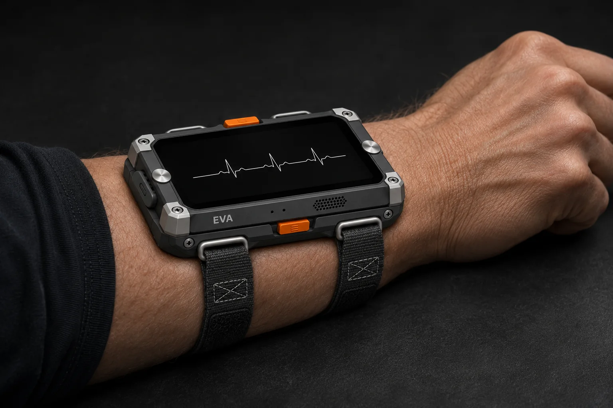</div>
        <div class="chip" style="right:6%;top:7%"></div>
        <div class="chip" style="right:12%;top:58%"></div>
        <div class="chip" style="left:38%;top:-3%"></div>
        <div class="chip" style="left:30%;bottom:-5%"></div>
        <div class="chip" style="right:30%;bottom:-4%">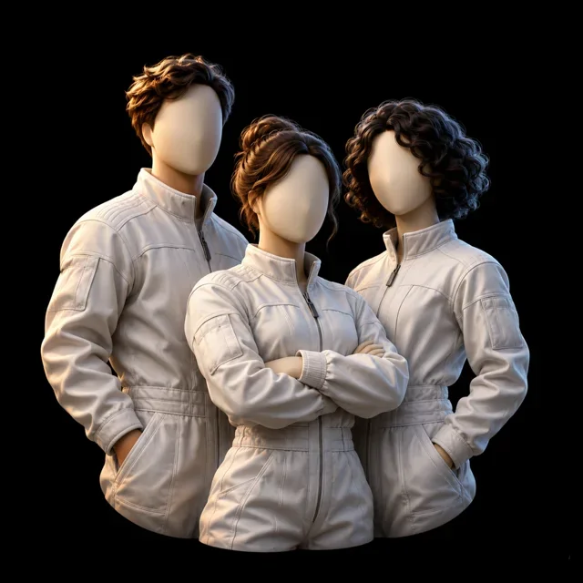</div>
      </div>
      <div class="ground" id="ground">
        <div class="cab"></div>
        <div class="shade"></div>
      </div>
      <div class="copy" id="heroCopy"><h1>Eva</h1><p data-i18n>The AI copilot that <b>guides</b>, <b>records</b> and <b>warns</b> on the way to Mars.</p></div>
    </div>
  </section>

  <!-- 2 · Statement -->
  <section class="space statement g" aria-labelledby="st">
    
    <p class="big" id="st" data-reveal data-i18n>Fifteen passengers. <span class="mk">No doctor</span> on board. Earth up to <span class="mk">22 minutes</span> away.</p>
    <div class="row">
      <p data-reveal>Wristband<small>The only thing anyone wears: two magnetic modules, a sensor base on the skin and a screen on top with voice, the help button and ECG on demand.</small></p>
      <p data-reveal>Emergency station<small>Twelve lit compartments with the AED in 01, a short float from every seat. The AED decides the shock.</small></p>
      <p data-reveal>Ship hub<small>The one host: runs Eva offline and keeps the signed log. No internet, no Earth needed.</small></p>
    </div>
  </section>

  <!-- 3 · Sensors record → Eva acts -->
  <section class="g spin" id="spin" aria-labelledby="sp">
    <div class="sh"><h2 id="sp">Sensors record. Eva acts.</h2></div>
    <p class="prop lead" data-reveal style="margin-top:28px;max-width:15em">NASA already senses the crew. Eva turns that sensing into action.</p>
    <div class="ba" data-reveal>
      <div>
        <p class="label">Today</p>
        <h3>The wrist records</h3>
        <p class="note">On Artemis II, the ARCHeR study (Artemis Research for Crew Health and Readiness) had the crew wear the ActLumus wrist actigraph by Condor Instruments.</p>
        <ul><li>Motion<span>Arm activity, rest</span></li><li>Sleep<span>Sleep and wake patterns</span></li><li>Light<span>10 spectral sensors</span></li><li>Temperature<span>Body temperature</span></li><li>Event button<span>Marks a moment</span></li><li>Output<span>Data for later analysis</span></li></ul>
        <p class="note">It records. It does not alert or guide.</p>
      </div>
      <svg class="arr" viewBox="0 0 90 40" aria-hidden="true"><path d="M0 20H86M68 4 86 20 68 36" fill="none" stroke="currentColor" stroke-width="2.5"/></svg>
      <div class="now">
        <p class="label">With Eva</p>
        <p class="ten">10 s</p>
        <h3>Within 10 seconds of an event, the person knows what to do, where to go and how to get there</h3>
        <ul><li>What to do<span>One action per step</span></li><li>Where to go<span>Seat, station or shelter</span></li><li>How to get there<span>Route on the wrist, voice, vibration</span></li><li>Who helps<span>Nearest trained helper, AED runner</span></li><li>Record<span>Signed and sent to Earth</span></li></ul>
        <p class="note">The 10 seconds are our design target. Eva is a new interface over the sensing, not a new sensor.</p>
      </div>
    </div>
    <p class="src">Sources: <a href="https://pesquisaparainovacao.fapesp.br/4031">FAPESP · Pesquisa para Inovação, the Condor Instruments actigraph on Artemis II</a> · <a href="https://www.nasa.gov/image-detail/amf-jsc2025e075542_alt/">NASA · ARCHeR actigraphy device (jsc2025e075542)</a> · <a href="https://agencia.fapesp.br/58065">Agência FAPESP · the ActLumus actigraph</a></p>
  </section>

  <!-- 4 · Eva's functions -->
  <section class="g fns" id="eva" aria-labelledby="fn">
    <div class="sh"><h2 id="fn">What Eva does</h2></div>
    <p class="prop" data-reveal style="margin-top:28px;max-width:15em">Eva, the AI copilot, in twelve lines</p>
    <ol class="fgrid">
      <li><b>Multimodal chat</b><span>Text, voice, photo and video, in plain language.</span></li>
      <li><b>Reads the wristband live</b><span>Every signal against your own baseline, not a population average.</span></li>
      <li><b>Diagnostic support in four parts</b><span>What is happening now, why, how she decided, what comes next. The crew lead confirms.</span></li>
      <li><b>Emergency guidance</b><span>One action per step, on the wrist, by voice and by vibration.</span></li>
      <li><b>Assigns the helpers</b><span>The nearest trained passenger for CPR and a runner for the AED.</span></li>
      <li><b>Guides to the station</b><span>Lights the right compartment and says what to take.</span></li>
      <li><b>ECG on demand</b><span>Two fingers, 30 seconds. Never continuous, never a shock decision.</span></li>
      <li><b>Solar storm alert</b><span>Minutes of warning and a lit route to the shelter.</span></li>
      <li><b>Daily log and emotional journal</b><span>Sleep, meals, water and mood, in a few taps or a few words.</span></li>
      <li><b>Signed records to Earth</b><span>Every step hash-chained and sent over the near-space link.</span></li>
      <li><b>Works offline</b><span>Runs on the ship hub. No internet and no Earth needed.</span></li>
      <li><b>Shared tools</b><span>Eva or you can trigger any tool: ECG check, check-in, call for help, route to the shelter.</span></li>
    </ol>
    <p class="rule"><b>Diagnostic support, not diagnosis.</b> Eva guides, records and warns. The crew lead confirms, and the AED decides the shock.</p>
  </section>

  <!-- 5 · Wristband v2: two magnetic modules (interim visuals: team reference images band2-*.webp, to be swapped for renders) -->
  <section class="pinsec storyp bandp" id="wsec" aria-labelledby="wh">
    <div class="stage">
      <div class="bview"><div class="bfig" id="bfig">
        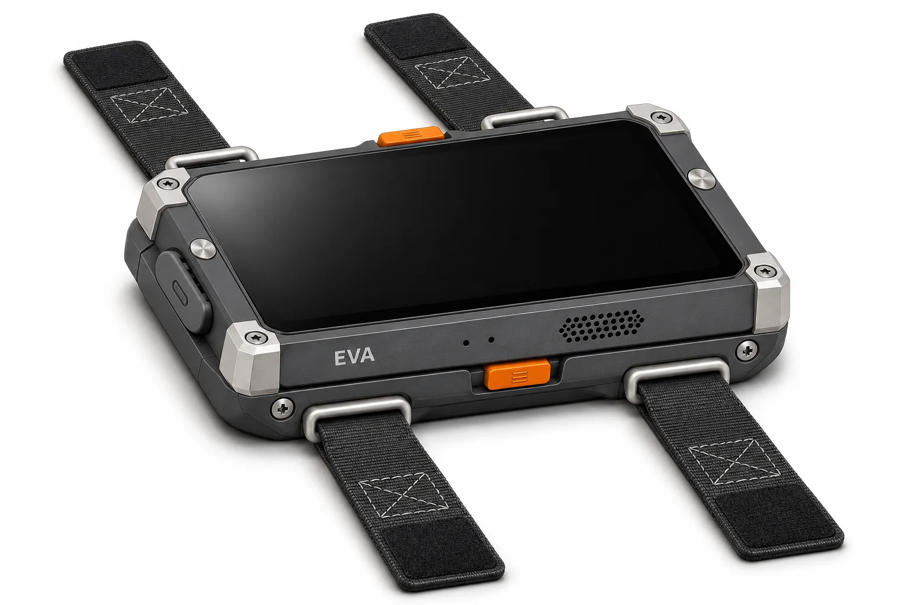
        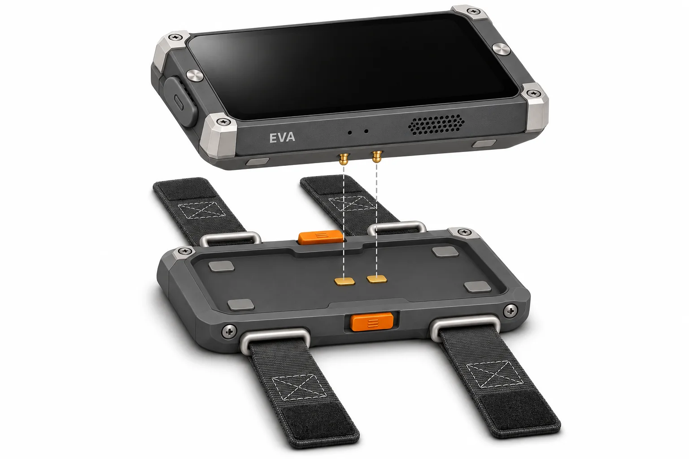
        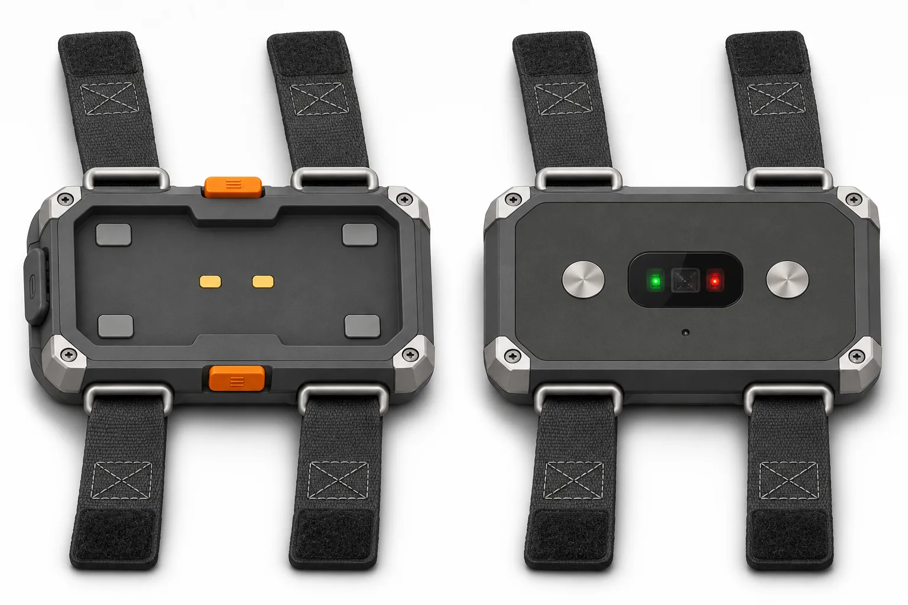
        <svg class="bsuit" viewBox="0 0 1400 933" role="img" aria-label="Suit mode cross-section: the suit sleeve sits between the screen module and the sensor base; the magnets hold, the contacts stay apart, and the base keeps sending by LoRa.">
          <rect x="250" y="250" width="900" height="120" fill="#3A3D42"/><rect x="290" y="262" width="820" height="34" fill="#050607"/><rect x="250" y="250" width="34" height="120" fill="#c4c6c8"/><rect x="1116" y="250" width="34" height="120" fill="#c4c6c8"/>
          <rect x="345" y="350" width="40" height="20" fill="#a6abb0"/><rect x="1015" y="350" width="40" height="20" fill="#a6abb0"/>
          <path d="M120 392 Q 300 378 480 392 T 840 392 T 1180 392 V 426 Q 1000 440 840 426 T 480 426 T 120 426 Z" fill="#e6dfd1" stroke="#b9ae9b" stroke-width="2"/>
          <rect x="300" y="444" width="800" height="80" fill="#3A3D42"/><rect x="345" y="444" width="40" height="18" fill="#a6abb0"/><rect x="1015" y="444" width="40" height="18" fill="#a6abb0"/>
          <rect x="676" y="430" width="10" height="14" fill="#d4a63a"/><rect x="714" y="430" width="10" height="14" fill="#d4a63a"/>
          <path d="M365 372V442M1035 372V442" stroke="#F28A1A" stroke-width="4" stroke-dasharray="6 6"/>
          <path d="M150 540 Q 700 556 1250 540 V 572 Q 700 590 150 572 Z" fill="#e8c4ab"/>
          <path d="M1120 470a30 30 0 0 1 0 40M1140 455a52 52 0 0 1 0 70M1160 440a74 74 0 0 1 0 100" fill="none" stroke="#0b6aa6" stroke-width="4"/>
          <text x="250" y="186" font-size="43">Screen module</text><text x="250" y="232" font-size="31" fill="#555">Main battery · help button · voice · ECG pads</text>
          <text x="70" y="296" font-size="34">Magnets</text><text x="70" y="334" font-size="34">hold</text><path d="M140 346 345 360" stroke="#0c0c0c" stroke-width="1.5"/>
          <text x="1190" y="404" font-size="34">Suit</text><text x="1190" y="436" font-size="34">sleeve</text>
          <text x="700" y="494" font-size="31" fill="#f4f3f0" text-anchor="middle">Sensor base · contacts apart · own battery</text>
          <text x="1190" y="492" font-size="34" fill="#0b6aa6">LoRa keeps</text><text x="1190" y="524" font-size="34" fill="#0b6aa6">sending</text>
          <text x="700" y="630" font-size="34" text-anchor="middle">Skin · pulse, SpO₂, temperature, EDA</text>
          <text x="700" y="700" font-size="31" fill="#555" text-anchor="middle">ECG still works with bare fingers on the two pads</text>
        </svg>
                <div class="bscr" id="bscr" aria-hidden="true">
          <div class="ui on" data-u="home"><div class="k"><span>EVA</span><span>08:42</span></div><div class="big">All good</div><div class="sub">Pulse 72 · SpO₂ 98% · 36.4 °C</div></div>
          <div class="ui" data-u="ecg"><div class="k"><span>EVA · ECG</span><span>24 s</span></div><svg viewBox="0 0 240 40" preserveAspectRatio="none"><path d="M0 24H18l4-3 4 3h6l3 4 4-22 4 26 3-8h10l5-5 6 5H72l4-3 4 3h6l3 4 4-22 4 26 3-8h10l5-5 6 5H126l4-3 4 3h6l3 4 4-22 4 26 3-8h10l5-5 6 5H180l4-3 4 3h6l3 4 4-22 4 26 3-8h10l5-5 6 5H240"/></svg><div class="sub">Keep still · one finger on each pad</div></div>
        </div>
        <div class="hs on" data-k="0"><i class="hot" style="left:45.5%;top:22.4%"><span>Help button</span></i><i class="hot" style="left:57%;top:61.9%"><span>Base button</span></i><i class="hot" style="left:19.6%;top:48%"><span>Side button</span></i><i class="hot" style="left:66.2%;top:53.8%"><span>Speaker</span></i></div>
        <div class="hs" data-k="1"><i class="hot" style="left:50%;top:13%"><span>Screen module</span></i><i class="hot" style="left:54.7%;top:34.8%"><span>Spring contacts</span></i><i class="hot l" style="left:65%;top:54.8%"><span>Magnet seat</span></i><i class="hot" style="left:28%;top:62%"><span>Sensor base</span></i></div>
        <div class="hs" data-k="2"><i class="hot" style="left:12.5%;top:38.8%"><span>Magnet seat</span></i><i class="hot ml" style="left:23.2%;top:46.5%"><span>Contacts</span></i><i class="hot" style="left:13.8%;top:65.4%"><span>Strap loop</span></i><i class="hot l" style="left:86.8%;top:43.8%"><span>EDA electrode</span></i><i class="hot ml" style="left:75.5%;top:50.6%"><span>Pulse and SpO₂ sensor</span></i></div>
        <div class="hs" data-k="4"><i class="hot l mr" style="left:22.3%;top:41.3%"><span>ECG pad</span></i><i class="hot ml" style="left:77%;top:29.5%"><span>ECG pad</span></i></div>
      </div></div>
      <div class="ptxt">
        <p class="label" id="wh">Wristband</p>
        <div class="sts">
          <div class="st" data-v="0"><span class="n">01 / 05</span><h3>One band, two magnetic modules</h3><p>A rugged screen module clicks onto a slim sensor base. Metal corner bumpers, a rubberised frame and orange buttons you can find without looking.</p></div>
          <div class="st" data-v="1"><span class="n">02 / 05</span><h3>The screen module on top</h3><p>The main battery, the help button, voice, vibration, its own LoRa radio and the two ECG pads. Spring contacts link it to the base.</p></div>
          <div class="st" data-v="2"><span class="n">03 / 05</span><h3>The sensor base on the skin</h3><p>Pulse and SpO₂, skin temperature, EDA, motion, with its own battery and LoRa. Both straps belong to the base, so the screen lifts off.</p></div>
          <div class="st" data-v="3"><span class="n">04 / 05</span><h3>Suit mode</h3><p>The sleeve goes between the modules. The magnets hold, the contacts part, and the base runs on its own battery and keeps sending by LoRa.</p></div>
          <div class="st" data-v="0" data-u="ecg"><span class="n">05 / 05</span><h3>ECG on demand: two fingers, 30 seconds</h3><p>One finger of each hand on the two metal pads. A strip for diagnostic support, never continuous, and it never decides a shock.</p></div>
        </div>
        <div class="bar"><i></i></div>
      </div>
    </div>
  </section>

  <!-- 4 · Case A (pinned, scenes on the left, text in the right negative space) -->
  <section class="pinsec storyp caseA" id="caseA" aria-labelledby="ca">
    <div class="stage">
      <div class="scn">
        
        
        
        
        
        <div class="ping" id="hlA"><i></i><span id="hlT" data-i18n-js></span></div>
      </div>
      <div class="ptxt">
        <p class="label" id="ca">Case A · Cannot act</p>
        <div class="sts">
          <div class="st" data-pt="37,43" data-tag="Passenger 07 · no pulse"><span class="n">01 / 05</span><h3>No pulse, no movement, no answer</h3><p>The wristband cross-checks independent signals before Eva calls anyone. Stillness alone is not an emergency.</p></div>
          <div class="st" data-pt="38,45" data-tag="Helper 1 · go to seat 07"><span class="n">02 / 05</span><h3>The nearest trained passenger starts CPR</h3><p>Their wristband shows where to go. If they do not confirm in 20 seconds, Eva calls the next one.</p></div>
          <div class="st" data-pt="31,28" data-tag="Compartment 01 · lit"><span class="n">03 / 05</span><h3>A second passenger brings the AED</h3><p>The station lights compartment 01 teal and its screen says Take the AED, so the runner finds it at a glance.</p></div>
          <div class="st" data-pt="38,31" data-tag="Push · 110 per minute"><span class="n">04 / 05</span><h3>CPR, one step at a time</h3><p>Eva paces every compression on the helper's wrist with a ring, voice and vibration.</p></div>
          <div class="st" data-pt="47,37" data-tag="AED · its own analysis"><span class="n">05 / 05</span><h3>The AED decides the shock</h3><p>It reads the rhythm through its own pads. Eva never does. Every step goes into the log for the ship and for Earth.</p></div>
        </div>
        <div class="bar"><i></i></div>
      </div>
    </div>
  </section>

  <!-- 5 · Case B (pinned): a guided ECG check on the wrist -->
  <section class="pinsec storyp caseB" id="caseB" aria-labelledby="cb">
    <div class="stage">
      <div class="ptxt">
        <p class="label" id="cb">Case B · Can act</p>
        <div class="sts">
          <div class="st"><span class="n">01 / 04</span><h3>Eva offers a quick ECG check</h3><p>A pulse that looks irregular, or you say you feel unwell. You are awake and able, so Eva guides you through it yourself.</p></div>
          <div class="st"><span class="n">02 / 04</span><h3>One finger of each hand, 30 seconds</h3><p>Rest them on the two metal pads and keep still. It works over the suit if your hands are bare.</p></div>
          <div class="st"><span class="n">03 / 04</span><h3>Regular rhythm · saved and sent to the hub</h3><p>The strip goes into your log and to the ship hub, ready for Earth. A check on demand, never continuous, never a shock decision.</p></div>
          <div class="st"><span class="n">04 / 04</span><h3>If something looks wrong, a passenger comes</h3><p>Eva calls the nearest helper and switches to Case A if you stop responding.</p></div>
        </div>
        <div class="bar"><i></i></div>
      </div>
      <div class="bdev" id="bdev" data-s="0">
        <div class="w">
          <i class="hot pad" style="left:31%;top:41.6%"></i><i class="hot pad" style="left:67.3%;top:41.6%"></i>
          <div class="scr" id="scr" data-s="0" aria-live="polite">
            <div class="ring" id="uiP" data-i18n-js aria-hidden="true">♥︎</div>
            <div class="col">
              <div class="top"><small id="uiK" data-i18n-js>ECG check · 1 of 3</small><b id="uiS" data-i18n-js></b></div>
              <svg viewBox="0 0 240 40" preserveAspectRatio="none" aria-hidden="true"><path pathLength="100" d="M0 24H18l4-3 4 3h6l3 4 4-22 4 26 3-8h10l5-5 6 5H72l4-3 4 3h6l3 4 4-22 4 26 3-8h10l5-5 6 5H126l4-3 4 3h6l3 4 4-22 4 26 3-8h10l5-5 6 5H180l4-3 4 3h6l3 4 4-22 4 26 3-8h10l5-5 6 5H240"/></svg>
              <span class="tx" id="uiT" data-i18n-js>Touch both metal pads, one finger of each hand</span>
            </div>
          </div>
        </div>
      </div>
    </div>
  </section>

  <!-- 8 · Emergency station: 12 compartments; Eva lights 01 and the sensors report back (interim visuals: station-*.webp; images carry Spanish labels, English is overlaid) -->
  <section class="pinsec xsec esec" id="esec" data-s="0" aria-labelledby="eh">
    <div class="stage">
      
      <div class="head" id="ehead"><p class="label" id="eh">Emergency station</p><h2 class="prop">Eva shows what to take. <span class="mk">The AED decides the shock.</span></h2></div>
      <div class="sfig" id="sfig">
        
        <div class="tag" style="left:14.1%;top:27.2%"><b>01</b>AED</div><div class="tag" style="left:33.9%;top:27.2%"><b>02</b>Breathing</div><div class="tag" style="left:53.2%;top:27.2%"><b>03</b>Diagnostics</div><div class="tag" style="left:72.5%;top:27.2%"><b>04</b>Ultrasound</div>
        <div class="tag" style="left:14.1%;top:48.8%"><b>05</b>Wounds</div><div class="tag" style="left:33.9%;top:48.8%"><b>06</b>Restraint</div><div class="tag" style="left:53.2%;top:48.8%"><b>07</b>Oral meds</div><div class="tag" style="left:72.5%;top:48.8%"><b>08</b>Injectables</div>
        <div class="tag" style="left:14.1%;top:69.5%"><b>09</b>IV access</div><div class="tag" style="left:33.9%;top:69.5%"><b>10</b>Eyes and dental</div><div class="tag" style="left:53.2%;top:69.5%"><b>11</b>Airway</div><div class="tag" style="left:72.5%;top:69.5%"><b>12</b>Hygiene</div>
        <div class="scr" aria-live="polite"><b>EVA</b><span class="s0">Standing by</span><small class="s0">All 15 passengers stable</small><span class="s1">Take the AED</span><small class="s1">Compartment 01 · lit</small></div>
        <div class="c01" aria-hidden="true"></div>
        <i class="hot h-door" style="left:32.1%;top:31%"><span>Door sensor</span></i>
        <i class="hot h-item" style="left:20.7%;top:40.5%"><span>Item sensor</span></i>
        <i class="hot l h-btn" style="left:68.4%;top:18.4%"><span>Red button</span></i>
        <div class="taken">AED taken · 00:47</div>
      </div>
      <div class="ledger" id="eledger">
        <div class="lbl" data-at=".1">12 compartments<small>Numbered, labelled, each behind a clear window with a light strip</small></div>
        <div class="lbl" data-at=".24">Eva screen: Take the AED<small>Eva says what to take, in words</small></div>
        <div class="lbl" data-at=".38">Compartment 01 lights teal<small>The AED and spare pads, found at a glance</small></div>
        <div class="lbl" data-at=".52">Door 01 open · 00:41<small>The door sensor reports to the hub</small></div>
        <div class="lbl" data-at=".66">AED taken · 00:47<small>The item sensor confirms; it goes into the signed log</small></div>
        <div class="lbl" data-at=".8">Red button<small>Anyone can raise the alarm to every wristband</small></div>
      </div>
    </div>
  </section>

  <section class="g kit2" id="stationKit" aria-labelledby="kh">
    <div class="sh"><h2 id="kh">Inside the station</h2></div>
    <ol class="cgrid">
      <li class="on"><b>01</b><span>AED</span><small>The AED and spare pads. Lights teal when Eva asks for it.</small></li>
      <li><b>02</b><span>Breathing</span><small>Oxygen bottle, mask, bag-valve mask</small></li>
      <li><b>03</b><span>Diagnostics</span><small>Monitor, thermometer, glucometer</small></li>
      <li><b>04</b><span>Ultrasound</span><small>Probe, screen and gel</small></li>
      <li><b>05</b><span>Wounds</span><small>Dressings, bandages, scissors</small></li>
      <li><b>06</b><span>Restraint</span><small>Straps to secure a patient</small></li>
      <li><b>07</b><span>Oral meds</span><small>Tablets in blister packs</small></li>
      <li><b>08</b><span>Injectables</span><small>Station kit used by the crew</small></li>
      <li><b>09</b><span>IV access</span><small>Fluids and lines</small></li>
      <li><b>10</b><span>Eyes and dental</span><small>Eye irrigation and dental kit</small></li>
      <li><b>11</b><span>Airway</span><small>Airway tubes and suction</small></li>
      <li><b>12</b><span>Hygiene</span><small>Gloves, goggles, waste bags, sharps bin</small></li>
    </ol>
    <div class="variants">
      <figure><figcaption>Wall panel, four rows of three. On top: the Eva screen, the red button and a printed AED retrieval guide.</figcaption></figure>
      <figure><figcaption>Variant: a centre cabinet whose side doors open to compartments 07 to 12. Concept images carry Spanish labels; the legend above is the product text.</figcaption></figure>
    </div>
  </section>

  <!-- 9 · How it links: one host (ship hub), many clients -->
  <section class="g links" id="links" aria-labelledby="lh">
    <div class="sh"><h2 id="lh">How it links</h2></div>
    <p class="prop lead" data-reveal>One ship hub hosts everything. Wristbands, phones and the station are its clients.</p>
    <svg class="dg wide" viewBox="0 0 1200 640" role="img" aria-labelledby="dgT dgD">
      <title id="dgT">How Eva's parts link</title>
      <desc id="dgD">The ship hub is the one host. Wristbands talk to it over LoRa and relay for each other in a mesh. A phone or tablet connects over the ship's Wi-Fi. The emergency station is a client over LoRa: the hub tells it to light compartment 01 and it reports the door open and the AED taken. If the hub is down, a wristband's no-pulse alarm goes straight to the station, and the station's red button alarms every wristband. The hub sends signed records to a ground station on Earth over the near-space link.</desc>
      <defs>
        <marker id="aN" viewBox="0 0 10 10" refX="9" refY="5" markerWidth="7" markerHeight="7" orient="auto-start-reverse"><path class="m-net" d="M0 0 10 5 0 10Z"/></marker>
        <marker id="aA" viewBox="0 0 10 10" refX="9" refY="5" markerWidth="7" markerHeight="7" orient="auto-start-reverse"><path class="m-al" d="M0 0 10 5 0 10Z"/></marker>
        <marker id="aI" viewBox="0 0 10 10" refX="9" refY="5" markerWidth="7" markerHeight="7" orient="auto-start-reverse"><path class="m-ink" d="M0 0 10 5 0 10Z"/></marker>
      </defs>
      <!-- links -->
      <path class="wifi" d="M600 112V218" marker-end="url(#aI)"/>
      <path class="lora" d="M290 170C380 170 400 262 466 262" marker-end="url(#aN)"/>
      <path class="lora" d="M290 280H466" marker-end="url(#aN)"/>
      <path class="lora" d="M290 390C380 390 400 298 466 298" marker-end="url(#aN)"/>
      <path class="mesh" d="M110 200V250M110 310V360"/>
      <path class="lora" d="M732 292H916" marker-end="url(#aN)"/>
      <path class="lora" d="M916 340H732" marker-end="url(#aN)"/>
      <path class="nsl" d="M732 240C830 240 830 86 916 86" marker-end="url(#aI)"/>
      <path class="alarm" d="M200 422C330 560 840 560 1020 402" marker-start="url(#aA)" marker-end="url(#aA)"/>
      <!-- nodes -->
      <rect class="box" x="470" y="40" width="260" height="72"/><text class="t1" x="486" y="70">Phone or tablet</text><text class="t2" x="486" y="94">Optional big screen · the app</text>
      <rect class="box" x="920" y="40" width="250" height="92"/><text class="t1" x="936" y="70">Ground station</text><text class="t2" x="936" y="94">Earth · gets signed records</text><text class="t2" x="936" y="116">Store and forward, ACK</text>
      <rect class="hub" x="470" y="218" width="260" height="152"/><rect class="tagf" x="470" y="218" width="64" height="24"/><text class="t3" x="480" y="235">Host</text>
      <text class="t1" x="486" y="276">Ship hub</text><text class="t2" x="486" y="302">Eva · the signed log</text><text class="t2" x="486" y="324">Dashboard · serves the app</text><text class="t2" x="486" y="346">Near-space link to Earth</text>
      <rect class="box" x="50" y="140" width="240" height="60"/><text class="t1" x="66" y="167">Wristband</text><text class="t2" x="66" y="189">Passenger 03 · client</text>
      <rect class="box" x="50" y="250" width="240" height="60"/><text class="t1" x="66" y="277">Wristband</text><text class="t2" x="66" y="299">Passenger 07 · client</text>
      <rect class="box" x="50" y="360" width="240" height="60"/><text class="t1" x="66" y="387">Wristband</text><text class="t2" x="66" y="409">Passenger 11 · client</text>
      <text class="tnet" x="50" y="124">LoRa mesh: bands relay for each other</text>
      <rect class="box" x="920" y="250" width="250" height="150"/><rect class="teal" x="1140" y="262" width="18" height="18"/><text class="t1 es-sm" x="936" y="280">Emergency station</text><text class="t2" x="936" y="304">Client · own small computer</text><text class="t2" x="936" y="326">Lights, door and item sensors</text><text class="t2" x="936" y="348">LoRa · backup battery</text><text class="t2" x="936" y="370">Red button</text>
      <text class="tnet" x="744" y="282">Light 01 · Take the AED</text>
      <text class="tnet" x="744" y="362">Door 01 · AED taken</text>
      <text class="t2" x="610" y="168">Ship Wi-Fi</text>
      <text class="t2" x="770" y="150">Near-space link</text>
      <text class="tal" x="600" y="562" text-anchor="middle">Hub down: a wristband's no-pulse alarm goes straight to the station,</text>
      <text class="tal" x="600" y="584" text-anchor="middle">and the station's red button alarms every wristband.</text>
      <!-- legend -->
      <g transform="translate(50 618)"><path class="lora" d="M0 -5H40"/><text class="t2" x="50" y="0">LoRa</text><path class="wifi" d="M140 -5H180"/><text class="t2" x="190" y="0">Ship Wi-Fi</text><path class="alarm" d="M310 -5H350" style="animation:none"/><text class="t2" x="360" y="0">Alarm path when the hub is down</text><path class="nsl" d="M620 -5H660"/><text class="t2" x="670" y="0">Near-space link</text></g>
    </svg>
    <svg class="dg tall" viewBox="0 0 360 760" role="img" aria-labelledby="dgT2 dgD">
      <title id="dgT2">How Eva's parts link</title>
      <defs>
        <marker id="bN" viewBox="0 0 10 10" refX="9" refY="5" markerWidth="7" markerHeight="7" orient="auto-start-reverse"><path class="m-net" d="M0 0 10 5 0 10Z"/></marker>
        <marker id="bA" viewBox="0 0 10 10" refX="9" refY="5" markerWidth="7" markerHeight="7" orient="auto-start-reverse"><path class="m-al" d="M0 0 10 5 0 10Z"/></marker>
        <marker id="bI" viewBox="0 0 10 10" refX="9" refY="5" markerWidth="7" markerHeight="7" orient="auto-start-reverse"><path class="m-ink" d="M0 0 10 5 0 10Z"/></marker>
      </defs>
      <path class="nsl" d="M120 82V132" marker-end="url(#bI)"/><text class="t2" x="132" y="112">Near-space link</text>
      <path class="wifi" d="M222 196H250" marker-end="url(#bI)"/>
      <path class="lora" d="M34 252V476M34 330H46M34 403H46M34 476H46"/>
      <path class="mesh" d="M100 352V381M100 425V454"/>
      <path class="lora" d="M224 242H268V314" marker-start="url(#bN)" marker-end="url(#bN)"/><text class="tnet" x="232" y="276" text-anchor="end">Light 01</text><text class="tnet" x="232" y="296" text-anchor="end">AED taken</text>
      <path class="alarm" d="M160 403H196" marker-start="url(#bA)" marker-end="url(#bA)"/>
      <rect class="box" x="20" y="16" width="320" height="66"/><text class="t1" x="34" y="44" style="font-size:19px">Ground station · Earth</text><text class="t2" x="34" y="68">Signed records, store and forward, ACK</text>
      <rect class="hub" x="20" y="136" width="202" height="116"/><rect class="tagf" x="20" y="136" width="52" height="22"/><text class="t3" x="28" y="152">Host</text>
      <text class="t1" x="34" y="186" style="font-size:20px">Ship hub</text><text class="t2" x="34" y="208">Eva · signed log</text><text class="t2" x="34" y="228">Dashboard · the app</text>
      <rect class="box" x="252" y="160" width="88" height="72"/><text class="t2" x="262" y="186" style="fill:var(--ink)">Phone</text><text class="t2" x="262" y="206">or tablet</text><text class="t2" x="262" y="224">Wi-Fi</text>
      <rect class="box" x="46" y="308" width="114" height="44"/><text class="t2" x="56" y="335" style="fill:var(--ink)">Wristband 03</text>
      <rect class="box" x="46" y="381" width="114" height="44"/><text class="t2" x="56" y="408" style="fill:var(--ink)">Wristband 07</text>
      <rect class="box" x="46" y="454" width="114" height="44"/><text class="t2" x="56" y="481" style="fill:var(--ink)">Wristband 11</text>
      <text class="tnet" x="46" y="294">LoRa · mesh</text>
      <rect class="box" x="198" y="318" width="142" height="180"/><rect class="teal" x="314" y="330" width="14" height="14"/><text class="t1 es-sm" x="210" y="346" style="font-size:18px">Emergency</text><text class="t1 es-sm" x="210" y="368" style="font-size:18px">station</text><text class="t2" x="210" y="394">Client</text><text class="t2" x="210" y="414">Lights, door</text><text class="t2" x="210" y="432">and item sensors</text><text class="t2" x="210" y="452">Backup battery</text><text class="t2" x="210" y="472">Red button</text>
      <text class="tal" x="20" y="536">Hub down: a wristband's no-pulse</text><text class="tal" x="20" y="556">alarm goes straight to the station,</text><text class="tal" x="20" y="576">and its red button alarms every band.</text>
      <g transform="translate(20 624)"><path class="lora" d="M0 -5H36"/><text class="t2" x="46" y="0">LoRa</text><path class="wifi" d="M0 23H36"/><text class="t2" x="46" y="28">Ship Wi-Fi</text><path class="alarm" d="M0 51H36" style="animation:none"/><text class="t2" x="46" y="56">Alarm path when the hub is down</text><path class="nsl" d="M0 79H36"/><text class="t2" x="46" y="84">Near-space link</text></g>
    </svg>
    <p class="dg-note">For the demo, one laptop is the ship hub. Phones play the wristbands, and a tablet or a second browser window plays the station.</p>
    <div class="why3">
      <div><p class="label">01</p><h3>One source of truth</h3><p>The hub keeps the signed log and Eva's state. Every client reads and writes the same case.</p></div>
      <div><p class="label">02</p><h3>Simple clients, fully offline</h3><p>Bands, phones and the station sense, show and report. The ship works with no internet and no Earth.</p></div>
      <div><p class="label">03</p><h3>The alarm survives the hub</h3><p>If the hub fails, the alarm still reaches the station. When it returns, everyone uploads and the hash chain keeps the order.</p></div>
    </div>
  </section>

  <!-- 7 · Solar alert (fully procedural: canvas, no images) -->
  <section class="pinsec solar" id="solar" aria-labelledby="sa">
    <div class="stage">
      <canvas id="solarCv" role="img" aria-label="Hull camera view from the spacecraft: the Sun flares and a storm of protons streams straight at the camera."></canvas>
      <canvas id="sunGL" aria-label="3D model of the Sun from NASA. Drag to rotate it."></canvas>
      <canvas id="fxCv" aria-hidden="true"></canvas>
      <canvas id="asciiCv" aria-hidden="true"></canvas>
      <div class="hud" aria-hidden="true"><i class="c c1"></i><i class="c c2"></i><i class="c c3"></i><i class="c c4"></i><div class="bar"><span>Hull cam 02 · forward</span><span class="rec" id="recT" data-i18n-js>00:00:00</span></div></div>
      <div class="meter" id="meter" data-i18n-js>Proton flux · 2 pfu</div>
      <ol class="log" id="slog">
        <li data-at=".03">Eva watches NASA DONKI and NOAA GOES</li>
        <li data-at=".16" class="red">X-ray flare seen · the particles are about 18 minutes behind</li>
        <li data-at=".29">Every wristband alerted · <span id="nAck">0</span>/15 acknowledged</li>
        <li data-at=".43">The route to the storm shelter lights up on every wrist · <span id="nIn">0</span>/15 inside</li>
        <li data-at=".76">All 15 sheltered before the particles arrive · dose logged per passenger</li>
      </ol>
      <button class="ascii-t" id="asciiBtn" type="button" aria-pressed="false" hidden>+ ASCII</button>
      <p class="drag" id="sunHint">Drag the Sun</p>
      <div class="txt"><p class="label" id="sa">Solar alert</p><h2>Warned minutes early. Everyone stays in the shelter.</h2></div>
      <div class="alvig" aria-hidden="true"></div>
      <div class="alert" role="alert"><div class="al-tape"></div><div class="al-top"><svg viewBox="0 0 100 100" aria-hidden="true"><circle cx="50" cy="50" r="48" fill="#ffd400"/><circle cx="50" cy="50" r="8" fill="#000"/><path d="M50 37 L50 12 A38 38 0 0 1 82.9 31 L60.8 43.7 A13 13 0 0 0 50 37Z" fill="#000"/><path d="M50 37 L50 12 A38 38 0 0 1 82.9 31 L60.8 43.7 A13 13 0 0 0 50 37Z" fill="#000" transform="rotate(120 50 50)"/><path d="M50 37 L50 12 A38 38 0 0 1 82.9 31 L60.8 43.7 A13 13 0 0 0 50 37Z" fill="#000" transform="rotate(240 50 50)"/></svg>RADIATION STORM<em>LIVE</em></div><b data-i18n-js>Go to the shelter now</b><div class="al-count"><strong id="alT" data-i18n-js>18:00</strong><i id="alI" data-i18n-js>until the particles hit</i></div><span data-i18n-js>Drop everything. Follow the arrows on your wristband.</span></div>
    </div>
  </section>

  <!-- 8 · Earth link -->
  <section class="pinsec link-sec" id="linkSec" aria-labelledby="el">
    <div class="stage">
      
      <div class="head"><div><p class="label" id="el">Earth link</p><h2 class="prop" style="max-width:12em">Every step recorded, even minutes from Earth</h2></div><p class="lt" id="lt">3 min<small>one-way light time to Earth</small></p></div>
      <div class="playhead" aria-hidden="true"></div>
      <div class="track" id="track">
        <div class="tline" id="tline"><i></i><b></b></div>
        <div class="planet"></div>
        <div class="packet"><b>12:01:04</b><span>No pulse · passenger 07</span></div>
        <div class="packet"><b>12:01:05</b><span>CPR helper · passenger 03</span></div>
        <div class="packet"><b>12:01:06</b><span>AED runner · passenger 11</span></div>
        <div class="packet"><b>CPR 2:00</b><span>Signed, chained, queued</span></div>
        <div class="packet"><b>ACK</b><span>Received on Earth</span></div>
        <div class="planet"></div>
      </div>
    </div>
  </section>

  <!-- 9 · Mars arrival -->
  <section class="arrive" id="arrive" aria-label="Arrival">
    <div class="stage"><div class="dots"></div><p class="cap prop">Arrive with every step on record.</p></div>
  </section>

  <!-- 10 · Why -->
  <section class="g" aria-labelledby="why" style="margin-top:96px">
    <div class="sh"><h2 id="why">Why it matters</h2></div>
    <div class="ed" data-reveal>
      <p class="prop">Care that does not wait for a doctor</p>
      <div class="body">
        <p>Far from Earth, a crew has to detect, diagnose and treat on its own: one-way radio delays can pass twenty minutes, and on the ISS the crew medical officer often has about 40 hours of medical training. NASA researchers argue for an on-board clinical decision support system that says what to do now, why, how it decided and what comes next. In their preliminary analysis of a 26-month mission, raising the crew's skill this way cut deaths by at least 34%.<sup><a class="u" href="#refs">1</a></sup> Eva brings that idea to passengers with no training at all.</p>
        <p>Around 70% of astronauts on six-to-twelve-month missions aboard the ISS show significant vision changes, and 85% of 71 astronauts reported at least one nasal or sinus problem. On a commercial flight to Mars most passengers will not be clinicians, and Earth may be twenty minutes away by radio.</p>
        <p>We built Eva on NASA's open Inspiration4 data (OSDR OSD-575 and OSD-569). Against each crew member's own baseline, the metabolic panel the day after landing showed 16 of 72 changes, against 7 with standard laboratory ranges.</p>
        <p>Eva guides, records and warns, and gives diagnostic support that the crew lead confirms. The AED decides the shock. Treatment decisions belong to validated devices, never to a chat model.</p>
      </div>
    </div>
  </section>

  <!-- 11 · Slabs -->
  <section aria-labelledby="kit">
    <div class="g"><div class="sh"><h2 id="kit">WearMeds</h2></div></div>
    <div class="slabs">
      <article class="slab studio g" data-slab>
        <div><p class="name">Wristband</p><div class="specs"><div>Modules<span>Screen on top, sensor base on the skin, magnets</span></div><div>Screen<span>Main battery, help button, voice, ECG pads</span></div><div>Talks to<span>Ship hub over LoRa, from both modules</span></div></div></div>
        <div class="pic"><div class="tt" id="tt" tabindex="0" role="img" aria-label="The Eva wristband turning on a white studio stage. Drag it or use the arrow keys to turn it.">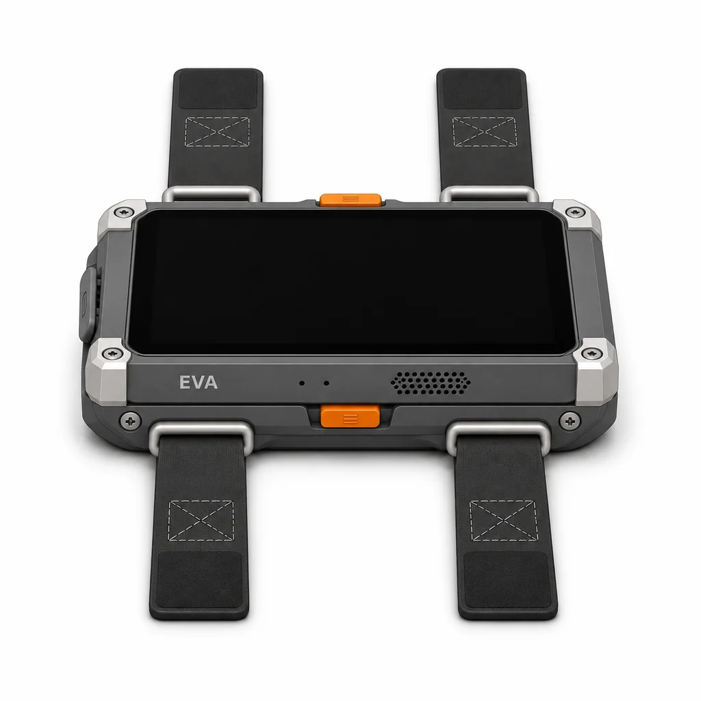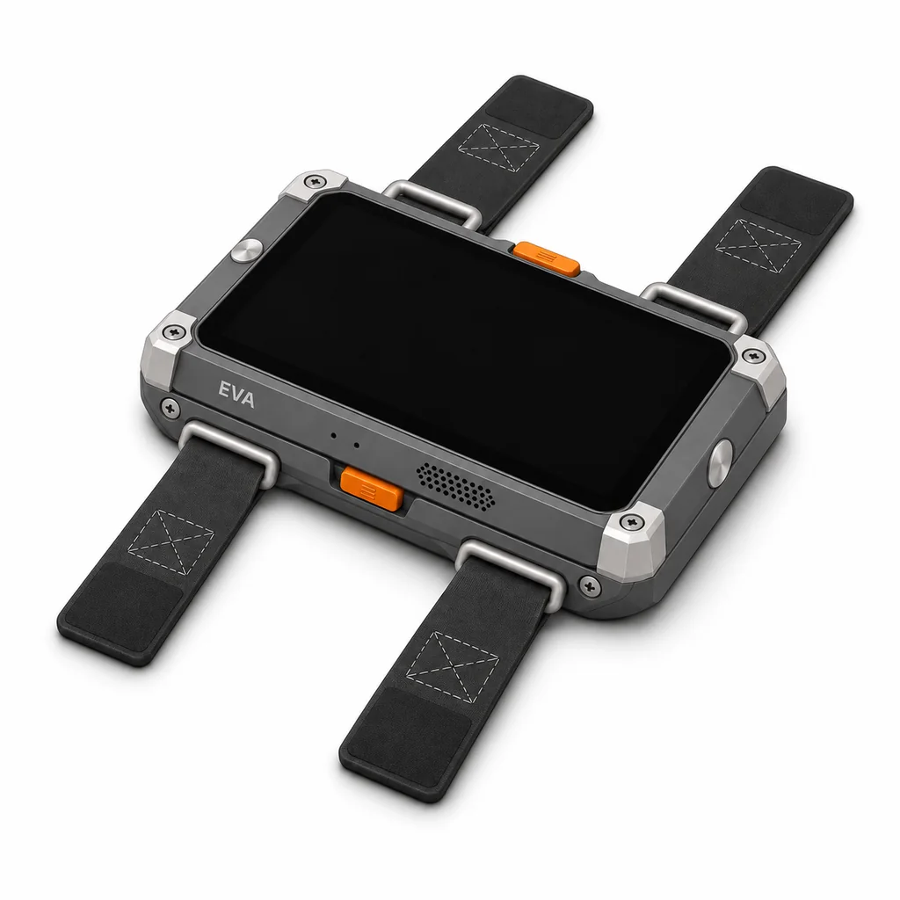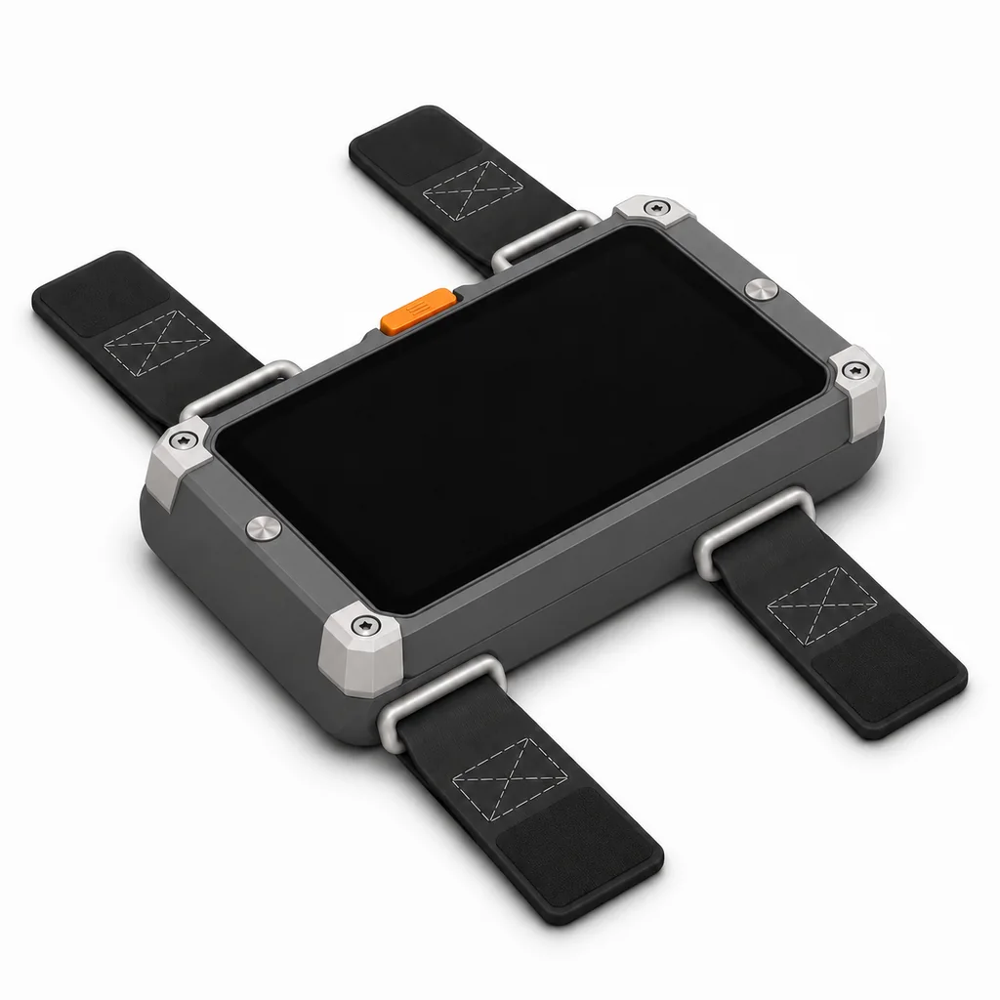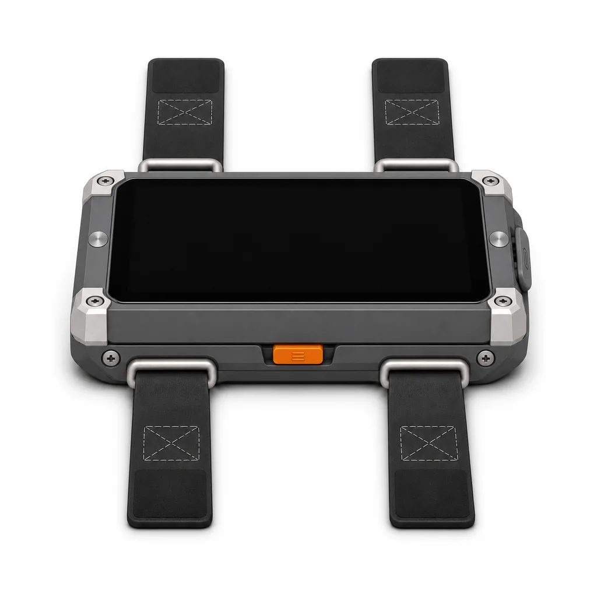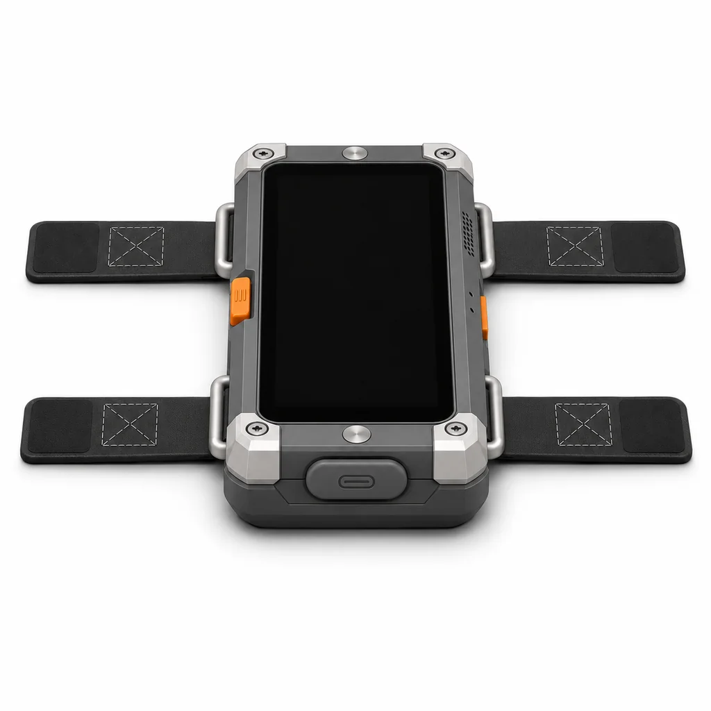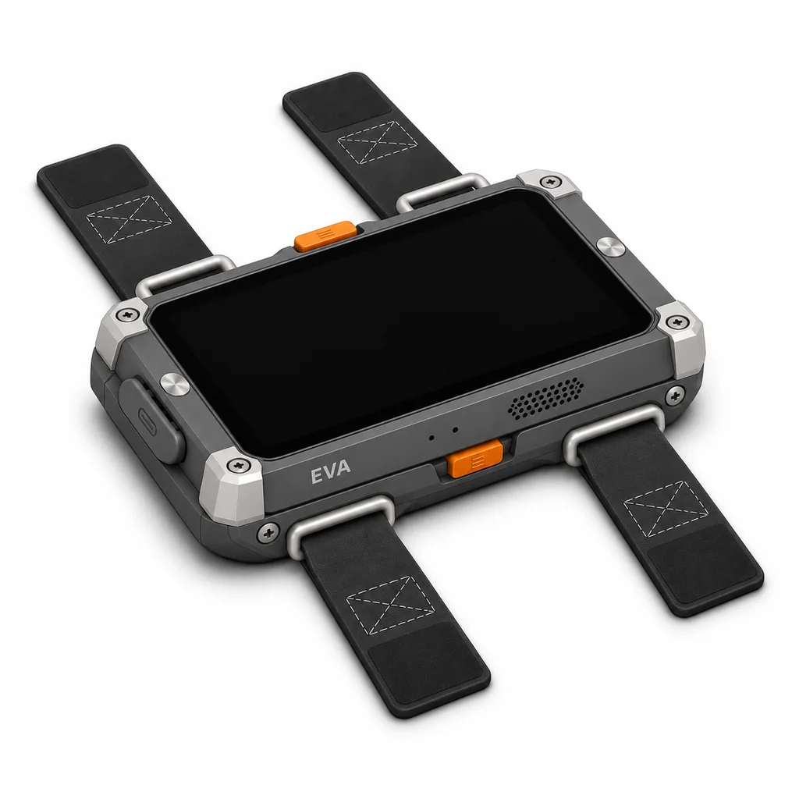</div><p class="tt-hint" aria-hidden="true">Drag to turn</p></div>
      </article>
      <article class="slab dark g" data-slab>
        <div><p class="name">Station</p><div class="specs"><div>Holds<span>12 compartments, the AED in 01</span></div><div>Eva<span>Lights 01 and says what to take</span></div><div>Decides<span>The AED, through its own pads</span></div></div></div>
        <div class="pic"></div>
      </article>
      <article class="slab g" data-slab>
        <div><p class="name">Ship hub</p><div class="specs"><div>Runs<span>Eva, the AI copilot, offline</span></div><div>Hosts<span>The app, the dashboard, the signed log</span></div><div>Sends<span>Signed records to Earth</span></div></div></div>
        <div class="pic"></div>
      </article>
    </div>
    <div class="g"><div class="parts" id="parts">
      <div class="part-card"><div class="im"></div><b>Screen module</b><span>Main battery, help button, voice</span></div>
      <div class="part-card"><div class="im">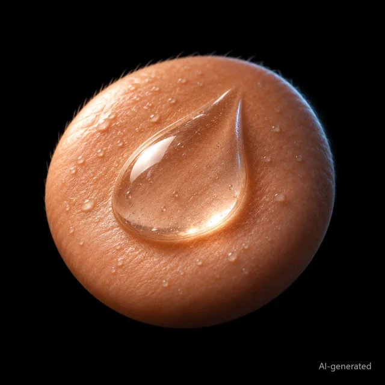</div><b>Sensor base</b><span>On the skin, own battery and LoRa</span></div>
      <div class="part-card"><div class="im">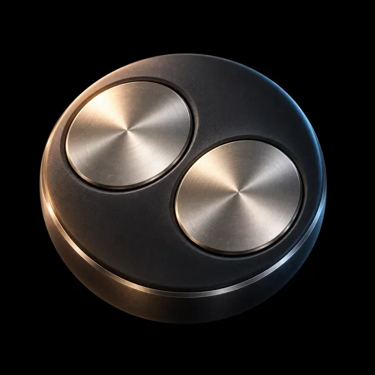</div><b>ECG pads</b><span>Two fingers, 30 seconds</span></div>
      <div class="part-card"><div class="im">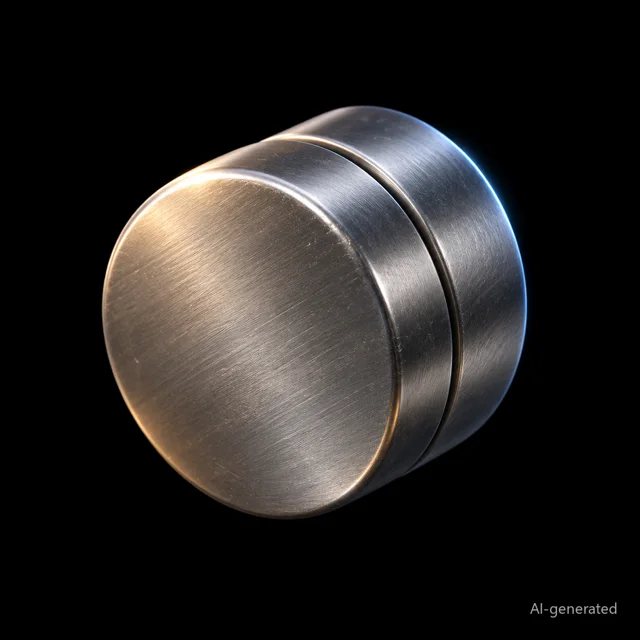</div><b>Magnets + contacts</b><span>Hold the modules, even through the suit</span></div>
      <div class="part-card"><div class="im"></div><b>Two batteries</b><span>Main in the screen, small in the base</span></div>
      <div class="part-card"><div class="im">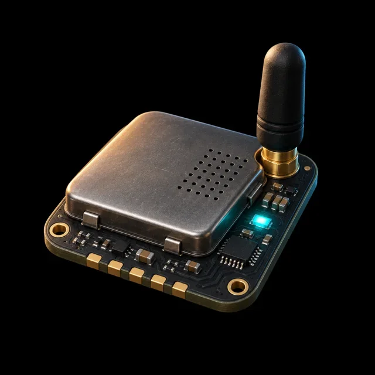</div><b>LoRa radio</b><span>In both modules</span></div>
      <div class="part-card"><div class="im"></div><b>Ship hub</b><span>The one host, runs Eva offline</span></div>
      <div class="part-card"><div class="im">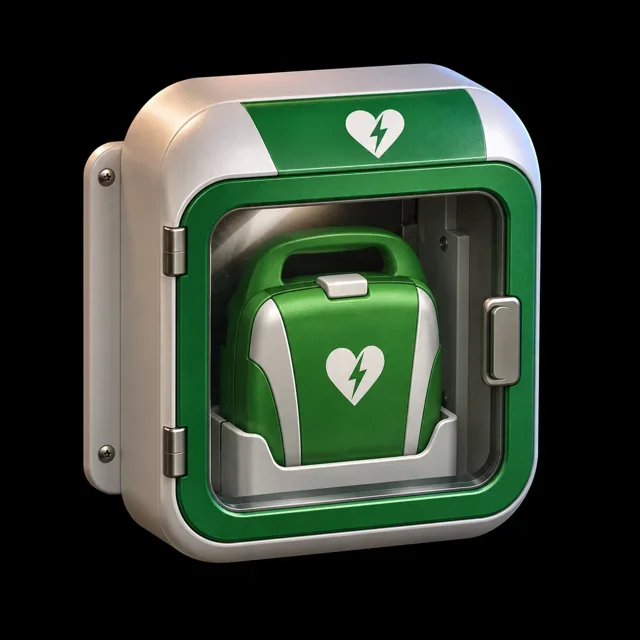</div><b>Emergency station</b><span>12 compartments, the AED decides</span></div>
    </div></div>
  </section>

  <!-- 12 · Business -->
  <section class="g" aria-labelledby="model">
    <div class="sh"><h2 id="model">Business</h2></div>
    <div class="ed" data-reveal>
      <p class="prop">Hardware once, Eva every mission</p>
      <div class="body">
        <p>Operators buy a WearMeds kit for each passenger and run Eva on the ship hub, licensed per mission.</p>
        <p>Bands come in sizes and finishes, the sensor base takes new validated sensors, and Eva works with the AED the ship already carries. The same platform serves orbital stays, lunar bases and remote work on Earth.</p>
        
      </div>
    </div>
  </section>

  <section class="g team-sec" aria-label="Team"><div id="team"></div></section>

  <section class="g close" id="contact" aria-labelledby="inv">
    <div class="sh"><h2>Contact</h2></div>
    <p id="inv">To see Eva working or to discuss a mission, start here:</p>
    <ul>
      <li><a href="https://claude.ai/artifact/DjrUadizcmVevJFVpCqR4m">Open the prototype <svg viewBox="0 0 46 46" aria-hidden="true"><path d="M10 36 36 10M14 10h22v22" fill="none" stroke="currentColor" stroke-width="3"/></svg></a></li>
      <li><a href="https://claude.ai/artifact/CXQN7Fn7UWVp6gWXPRfgAK">Read the research <svg viewBox="0 0 46 46" aria-hidden="true"><path d="M10 36 36 10M14 10h22v22" fill="none" stroke="currentColor" stroke-width="3"/></svg></a></li>
    </ul>
  </section>
</main>

<footer class="foot g" id="foot">
  <p class="notice" id="ai">Eva is a concept for NASA Space Apps Challenge 2026 and is not a medical device. Concept images are AI-generated; the AI notice is in the project README. The 3D Sun is NASA's free model from NASA 3D Resources.</p>
  <ol class="notice" id="refs" style="margin:0 0 24px;padding-left:1.2em"><li><span translate="no">Russell BK, Burian BK, Hilmers DC, Beard BL, Martin K, Pletcher DL, Easter B, Lehnhardt K, Levin D. The value of a spaceflight clinical decision support system for earth-independent medical operations. <i>npj Microgravity</i> 9, 46 (2023). <a class="u" href="https://doi.org/10.1038/s41526-023-00284-1">doi:10.1038/s41526-023-00284-1</a></span> · CC BY 4.0. Main source of this project.</li><li>NASA Open Science Data Repository: OSD-575 and OSD-569, Inspiration4 metabolic panel and blood count.</li><li>NASA DONKI and NOAA GOES space weather data.</li></ol>
  <div class="mark"><svg viewBox="0 0 1400 120" role="img" aria-label="Eva by WearMeds"><text x="0" y="104" textLength="1400" lengthAdjust="spacingAndGlyphs" fill="currentColor" font-family="PP Neue Montreal, Inter, Arial, sans-serif" font-size="132">Eva by WearMeds</text></svg></div>
  <div class="util"><span>© 2026 Sanjo-X · Space Apps Rosario</span><ul><li><a class="u" href="#ai">AI notice</a></li><li><a class="u" href="#refs">References</a></li><li><a class="u" href="https://ccmc.gsfc.nasa.gov/tools/DONKI/">Data sources</a></li></ul></div>
</footer>

<script>
/* EN / ES. English is written in the HTML and is the default (the deliverable is in English for NASA).
   Spanish lives in ES below, keyed by the English text itself (whitespace collapsed), so the HTML stays plain English.
   What gets translated: every visible text node, alt and aria-label, <title> and the meta description;
   elements marked data-i18n swap their whole innerHTML (for sentences with inline markup);
   elements marked data-i18n-js are written by the page script, which asks I18N.tr() for its strings;
   [translate="no"] (the formal citation, the language buttons) and the team rail (re-mounted per language) are skipped.
   Rioplatense register with "vos", the way the station screen already says "Retirá el DEA". */
window.I18N=(function(){
const ES={
/* head */
"Eva by WearMeds":"Eva de WearMeds",
"Eva is the AI copilot that guides, records and warns passengers on the way to Mars: a wristband, an emergency station and a ship hub that work with no doctor on board and no link to Earth.":"Eva es la copiloto de IA que guía, registra y alerta a los pasajeros en el viaje a Marte: una pulsera, una estación de emergencia y un hub de la nave que funcionan sin médico a bordo y sin enlace con la Tierra.",
"Main":"Principal","Language":"Idioma",
/* hero + statement */
"The AI copilot that <b>guides</b>, <b>records</b> and <b>warns</b> on the way to Mars.":"La copiloto de IA que <b>guía</b>, <b>registra</b> y <b>alerta</b> en el viaje a Marte.",
"Fifteen passengers. <span class=\"mk\">No doctor</span> on board. Earth up to <span class=\"mk\">22 minutes</span> away.":"Quince pasajeros. <span class=\"mk\">Ningún médico</span> a bordo. La Tierra puede quedar a <span class=\"mk\">22 minutos</span>.",
"Calm spacecraft cabin with Mars in the window.":"Cabina tranquila de la nave con Marte en la ventana.",
"Wristband":"Pulsera",
"The only thing anyone wears: two magnetic modules, a sensor base on the skin and a screen on top with voice, the help button and ECG on demand.":"Lo único que lleva cada persona: dos módulos magnéticos, una base de sensores sobre la piel y arriba una pantalla con voz, el botón de ayuda y ECG a demanda.",
"Emergency station":"Estación de emergencia",
"Twelve lit compartments with the AED in 01, a short float from every seat. The AED decides the shock.":"Doce compartimientos iluminados, con el DEA en el 01, a pocos segundos flotando desde cada asiento. El DEA decide la descarga.",
"Ship hub":"Hub de la nave",
"The one host: runs Eva offline and keeps the signed log. No internet, no Earth needed.":"El único host: corre Eva sin conexión y guarda el registro firmado. Sin internet y sin depender de la Tierra.",
/* sensors record → Eva acts */
"Sensors record. Eva acts.":"Los sensores registran. Eva actúa.",
"NASA already senses the crew. Eva turns that sensing into action.":"La NASA ya mide a la tripulación. Eva convierte esas mediciones en acción.",
"Today":"Hoy","The wrist records":"La muñeca registra",
"On Artemis II, the ARCHeR study (Artemis Research for Crew Health and Readiness) had the crew wear the ActLumus wrist actigraph by Condor Instruments.":"En Artemis II, el estudio ARCHeR (Artemis Research for Crew Health and Readiness) hizo que la tripulación usara el actígrafo de muñeca ActLumus, de Condor Instruments.",
"Motion":"Movimiento","Arm activity, rest":"Actividad del brazo, reposo",
"Sleep":"Sueño","Sleep and wake patterns":"Patrones de sueño y vigilia",
"Light":"Luz","10 spectral sensors":"10 sensores espectrales",
"Temperature":"Temperatura","Body temperature":"Temperatura corporal",
"Event button":"Botón de evento","Marks a moment":"Marca un momento",
"Output":"Salida","Data for later analysis":"Datos para analizar después",
"It records. It does not alert or guide.":"Registra. No alerta ni guía.",
"With Eva":"Con Eva",
"Within 10 seconds of an event, the person knows what to do, where to go and how to get there":"En menos de 10 segundos desde un evento, la persona sabe qué hacer, adónde ir y cómo llegar",
"What to do":"Qué hacer","One action per step":"Una acción por paso",
"Where to go":"Adónde ir","Seat, station or shelter":"Asiento, estación o refugio",
"How to get there":"Cómo llegar","Route on the wrist, voice, vibration":"Ruta en la muñeca, voz, vibración",
"Who helps":"Quién ayuda","Nearest trained helper, AED runner":"El ayudante capacitado más cercano y quien trae el DEA",
"Record":"Registro","Signed and sent to Earth":"Firmado y enviado a la Tierra",
"The 10 seconds are our design target. Eva is a new interface over the sensing, not a new sensor.":"Los 10 segundos son nuestro objetivo de diseño. Eva es una interfaz nueva sobre esas mediciones, no un sensor nuevo.",
"Sources:":"Fuentes:",
"FAPESP · Pesquisa para Inovação, the Condor Instruments actigraph on Artemis II":"FAPESP · Pesquisa para Inovação, el actígrafo de Condor Instruments en Artemis II",
"NASA · ARCHeR actigraphy device (jsc2025e075542)":"NASA · dispositivo de actigrafía de ARCHeR (jsc2025e075542)",
"Agência FAPESP · the ActLumus actigraph":"Agência FAPESP · el actígrafo ActLumus",
/* what Eva does */
"What Eva does":"Qué hace Eva",
"Eva, the AI copilot, in twelve lines":"Eva, la copiloto de IA, en doce líneas",
"Multimodal chat":"Chat multimodal","Text, voice, photo and video, in plain language.":"Texto, voz, foto y video, en lenguaje simple.",
"Reads the wristband live":"Lee la pulsera en vivo","Every signal against your own baseline, not a population average.":"Cada señal contra tu propia línea de base, no contra un promedio poblacional.",
"Diagnostic support in four parts":"Apoyo al diagnóstico en cuatro partes","What is happening now, why, how she decided, what comes next. The crew lead confirms.":"Qué pasa ahora, por qué, cómo lo decidió y qué sigue. El líder de la tripulación confirma.",
"Emergency guidance":"Guía en emergencias","One action per step, on the wrist, by voice and by vibration.":"Una acción por paso, en la muñeca, por voz y con vibración.",
"Assigns the helpers":"Asigna a los ayudantes","The nearest trained passenger for CPR and a runner for the AED.":"El pasajero capacitado más cercano para la RCP y otro que va a buscar el DEA.",
"Guides to the station":"Guía hasta la estación","Lights the right compartment and says what to take.":"Ilumina el compartimiento correcto y dice qué retirar.",
"ECG on demand":"ECG a demanda","Two fingers, 30 seconds. Never continuous, never a shock decision.":"Dos dedos, 30 segundos. Nunca continuo, nunca decide una descarga.",
"Solar storm alert":"Alerta de tormenta solar","Minutes of warning and a lit route to the shelter.":"Minutos de aviso y una ruta iluminada hasta el refugio.",
"Daily log and emotional journal":"Registro diario y diario emocional","Sleep, meals, water and mood, in a few taps or a few words.":"Sueño, comidas, agua y ánimo, con unos toques o unas palabras.",
"Signed records to Earth":"Registros firmados a la Tierra","Every step hash-chained and sent over the near-space link.":"Cada paso encadenado por hash y enviado por el enlace de espacio cercano.",
"Works offline":"Funciona sin conexión","Runs on the ship hub. No internet and no Earth needed.":"Corre en el hub de la nave. Sin internet y sin depender de la Tierra.",
"Shared tools":"Herramientas compartidas","Eva or you can trigger any tool: ECG check, check-in, call for help, route to the shelter.":"Eva o vos pueden activar cualquier herramienta: control de ECG, chequeo de estado, pedido de ayuda, ruta al refugio.",
"Diagnostic support, not diagnosis.":"Apoyo al diagnóstico, no diagnóstico.",
"Eva guides, records and warns. The crew lead confirms, and the AED decides the shock.":"Eva guía, registra y alerta. El líder de la tripulación confirma y el DEA decide la descarga.",
/* wristband v2 */
"The Eva wristband: a rugged graphite screen module with silver corner bumpers and orange buttons, on two dark fabric straps.":"La pulsera Eva: un módulo de pantalla robusto color grafito, con esquinas plateadas y botones naranjas, sobre dos correas de tela oscuras.",
"The screen module lifted above the sensor base: two spring contacts line up with the gold pads on the base, between the magnet seats.":"El módulo de pantalla levantado sobre la base de sensores: dos contactos de resorte se alinean con las placas doradas de la base, entre los alojamientos de los imanes.",
"The sensor base from above, with its contacts and magnet seats, and from below, with the optical pulse sensor and two steel skin electrodes.":"La base de sensores vista desde arriba, con sus contactos y los alojamientos de los imanes, y desde abajo, con el sensor óptico de pulso y dos electrodos de acero para la piel.",
"Suit mode cross-section: the suit sleeve sits between the screen module and the sensor base; the magnets hold, the contacts stay apart, and the base keeps sending by LoRa.":"Corte en modo traje: la manga del traje queda entre el módulo de pantalla y la base de sensores; los imanes sujetan, los contactos quedan separados y la base sigue enviando por LoRa.",
"Screen module":"Módulo de pantalla","Main battery · help button · voice · ECG pads":"Batería principal · botón de ayuda · voz · placas de ECG",
"Magnets":"Imanes","hold":"sujetan","Suit":"Manga","sleeve":"del traje",
"Sensor base · contacts apart · own battery":"Base de sensores · sin contacto · batería propia",
"LoRa keeps":"LoRa sigue","sending":"enviando",
"Skin · pulse, SpO₂, temperature, EDA":"Piel · pulso, SpO₂, temperatura, EDA",
"ECG still works with bare fingers on the two pads":"El ECG sigue funcionando con los dedos sobre las dos placas",
"All good":"Todo bien","Pulse 72 · SpO₂ 98% · 36.4 °C":"Pulso 72 · SpO₂ 98% · 36,4 °C",
"Keep still · one finger on each pad":"Sin moverte · un dedo en cada placa",
"Help button":"Botón de ayuda","Base button":"Botón de la base","Side button":"Botón lateral","Speaker":"Parlante",
"Spring contacts":"Contactos de resorte","Sensor base":"Base de sensores","Screen module, underside":"Módulo de pantalla, cara inferior",
"Contacts":"Contactos","Magnet seat":"Alojamiento del imán","Strap loop":"Pasador de la correa","ECG pad":"Placa ECG",
"Pulse and SpO₂ sensor":"Sensor de pulso y SpO₂","EDA electrode":"Electrodo EDA",
"One band, two magnetic modules":"Una pulsera, dos módulos magnéticos",
"A rugged screen module clicks onto a slim sensor base. Metal corner bumpers, a rubberised frame and orange buttons you can find without looking.":"Un módulo de pantalla robusto encastra sobre una base de sensores delgada. Esquinas metálicas, marco engomado y botones naranjas que se encuentran sin mirar.",
"The screen module on top":"Arriba, el módulo de pantalla",
"The main battery, the help button, voice, vibration, its own LoRa radio and the two ECG pads. Spring contacts link it to the base.":"La batería principal, el botón de ayuda, voz, vibración, su propia radio LoRa y las dos placas de ECG. Unos contactos de resorte lo conectan con la base.",
"The sensor base on the skin":"Sobre la piel, la base de sensores",
"Pulse and SpO₂, skin temperature, EDA, motion, with its own battery and LoRa. Both straps belong to the base, so the screen lifts off.":"Pulso y SpO₂, temperatura de la piel, EDA y movimiento, con batería y LoRa propias. Las dos correas son de la base, así que la pantalla se separa.",
"Suit mode":"Modo traje",
"The sleeve goes between the modules. The magnets hold, the contacts part, and the base runs on its own battery and keeps sending by LoRa.":"La manga queda entre los módulos. Los imanes sujetan, los contactos se separan y la base sigue con su propia batería, enviando por LoRa.",
"ECG on demand: two fingers, 30 seconds":"ECG a demanda: dos dedos, 30 segundos",
"One finger of each hand on the two metal pads. A strip for diagnostic support, never continuous, and it never decides a shock.":"Un dedo de cada mano sobre las dos placas metálicas. Un trazado para apoyo al diagnóstico, nunca continuo, y nunca decide una descarga.",
/* Case A */
"A still arm on a dark blanket; the wristband screen has gone dim.":"Un brazo inmóvil sobre una manta oscura; la pantalla de la pulsera se atenuó.",
"A helper's wristband shows a red running figure and an arrow.":"La pulsera de un ayudante muestra una figura roja corriendo y una flecha.",
"The ship's emergency station with compartment 01, the AED, lit teal and the Eva screen above it.":"La estación de emergencia de la nave con el compartimiento 01, el del DEA, iluminado en turquesa y la pantalla de Eva arriba.",
"A helper does chest compressions on a training manikin; a ring on the wristband paces each push.":"Un ayudante hace compresiones torácicas en un maniquí de entrenamiento; un anillo en la pulsera marca el ritmo de cada compresión.",
"AED pads in their sealed pack.":"Parches del DEA en su envase sellado.",
"Case A · Cannot act":"Caso A · No puede actuar",
"No pulse, no movement, no answer":"Sin pulso, sin movimiento, sin respuesta",
"The wristband cross-checks independent signals before Eva calls anyone. Stillness alone is not an emergency.":"La pulsera cruza señales independientes antes de que Eva llame a alguien. Quedarse quieto no es, por sí solo, una emergencia.",
"The nearest trained passenger starts CPR":"El pasajero capacitado más cercano empieza la RCP",
"Their wristband shows where to go. If they do not confirm in 20 seconds, Eva calls the next one.":"Su pulsera le muestra adónde ir. Si no confirma en 20 segundos, Eva llama al siguiente.",
"A second passenger brings the AED":"Un segundo pasajero trae el DEA",
"The station lights compartment 01 teal and its screen says Take the AED, so the runner finds it at a glance.":"La estación ilumina en turquesa el compartimiento 01 y su pantalla dice «Retirá el DEA», así quien corre lo encuentra de un vistazo.",
"CPR, one step at a time":"RCP, paso a paso",
"Eva paces every compression on the helper's wrist with a ring, voice and vibration.":"Eva marca el ritmo de cada compresión en la muñeca del ayudante con un anillo, voz y vibración.",
"The AED decides the shock":"El DEA decide la descarga",
"It reads the rhythm through its own pads. Eva never does. Every step goes into the log for the ship and for Earth.":"Lee el ritmo con sus propios parches. Eva nunca lo hace. Cada paso queda en el registro para la nave y para la Tierra.",
/* Case B */
"Case B · Can act":"Caso B · Puede actuar",
"Eva offers a quick ECG check":"Eva ofrece un control rápido de ECG",
"A pulse that looks irregular, or you say you feel unwell. You are awake and able, so Eva guides you through it yourself.":"Un pulso que parece irregular, o decís que te sentís mal. Estás consciente y en condiciones, así que Eva te guía para que lo hagas vos.",
"One finger of each hand, 30 seconds":"Un dedo de cada mano, 30 segundos",
"Rest them on the two metal pads and keep still. It works over the suit if your hands are bare.":"Apoyalos en las dos placas metálicas y no te muevas. Funciona sobre el traje si tenés las manos descubiertas.",
"Regular rhythm · saved and sent to the hub":"Ritmo regular · guardado y enviado al hub",
"The strip goes into your log and to the ship hub, ready for Earth. A check on demand, never continuous, never a shock decision.":"El trazado va a tu registro y al hub de la nave, listo para la Tierra. Un control a demanda, nunca continuo, nunca decide una descarga.",
"If something looks wrong, a passenger comes":"Si algo parece mal, viene un pasajero",
"Eva calls the nearest helper and switches to Case A if you stop responding.":"Eva llama al ayudante más cercano y pasa al Caso A si dejás de responder.",
"One finger of each hand rests on the metal pads at both ends of the wristband during an ECG check.":"Un dedo de cada mano apoyado en las placas metálicas de los dos extremos de la pulsera durante un control de ECG.",
/* emergency station: the overlay tags use the words printed on the station photo */
"Eva shows what to take.":"Eva muestra qué retirar.","The AED decides the shock.":"El DEA decide la descarga.",
"The ship's emergency station: a wall cabinet of 12 numbered compartments behind clear windows, an Eva screen and a red emergency button on top. Compartment 01 holds the AED.":"La estación de emergencia de la nave: un gabinete de pared con 12 compartimientos numerados tras ventanas transparentes, una pantalla de Eva y un botón rojo de emergencia arriba. El compartimiento 01 guarda el DEA.",
"AED":"DEA","Breathing":"Respiración","Diagnostics":"Diagnóstico","Ultrasound":"Ecografía","Wounds":"Heridas","Restraint":"Sujeción",
"Oral meds":"Medicación oral","Injectables":"Inyectables","IV access":"Acceso IV","Eyes and dental":"Ojos y dental","Airway":"Vía aérea","Hygiene":"Higiene",
"Standing by":"En espera","All 15 passengers stable":"Los 15 pasajeros, estables","Take the AED":"Retirá el DEA","Compartment 01 · lit":"Compartimiento 01 · encendido",
"Door sensor":"Sensor de puerta","Item sensor":"Sensor de objeto","Red button":"Botón rojo","AED taken · 00:47":"DEA retirado · 00:47",
"12 compartments":"12 compartimientos","Numbered, labelled, each behind a clear window with a light strip":"Numerados y rotulados, cada uno tras una ventana transparente con una tira de luz",
"Eva screen: Take the AED":"Pantalla de Eva: «Retirá el DEA»","Eva says what to take, in words":"Eva dice con palabras qué retirar",
"Compartment 01 lights teal":"El compartimiento 01 se ilumina en turquesa","The AED and spare pads, found at a glance":"El DEA y los parches de repuesto, a la vista",
"Door 01 open · 00:41":"Puerta 01 abierta · 00:41","The door sensor reports to the hub":"El sensor de puerta avisa al hub",
"The item sensor confirms; it goes into the signed log":"El sensor de objeto lo confirma y queda en el registro firmado",
"Anyone can raise the alarm to every wristband":"Cualquiera puede dar la alarma a todas las pulseras",
/* station legend */
"Inside the station":"Dentro de la estación",
"The AED and spare pads. Lights teal when Eva asks for it.":"El DEA y los parches de repuesto. Se ilumina en turquesa cuando Eva lo pide.",
"Oxygen bottle, mask, bag-valve mask":"Tubo de oxígeno, máscara, bolsa-válvula-máscara","Monitor, thermometer, glucometer":"Monitor, termómetro, glucómetro",
"Probe, screen and gel":"Transductor, pantalla y gel","Dressings, bandages, scissors":"Apósitos, vendas, tijera","Straps to secure a patient":"Correas para sujetar a un paciente",
"Tablets in blister packs":"Comprimidos en blíster","Station kit used by the crew":"Kit de la estación, para uso de la tripulación","Fluids and lines":"Sueros y vías",
"Eye irrigation and dental kit":"Lavado ocular y kit dental","Airway tubes and suction":"Tubos de vía aérea y aspiración","Gloves, goggles, waste bags, sharps bin":"Guantes, antiparras, bolsas de residuos, descartador de punzantes",
"Front view of the station as a 4 by 3 wall panel, compartment 01 lit, the Eva screen, the red button and the printed AED retrieval guide.":"Vista frontal de la estación como panel de pared de 4 por 3, con el compartimiento 01 iluminado, la pantalla de Eva, el botón rojo y la guía impresa para retirar el DEA.",
"Wall panel, four rows of three. On top: the Eva screen, the red button and a printed AED retrieval guide.":"Panel de pared, cuatro filas de tres. Arriba: la pantalla de Eva, el botón rojo y una guía impresa para retirar el DEA.",
"Variant of the station: a centre cabinet whose side doors open to reveal compartments 07 to 12.":"Variante de la estación: un gabinete central cuyas puertas laterales se abren y muestran los compartimientos 07 a 12.",
"Variant: a centre cabinet whose side doors open to compartments 07 to 12. Concept images carry Spanish labels; the legend above is the product text.":"Variante: un gabinete central cuyas puertas laterales abren los compartimientos 07 a 12. Las imágenes conceptuales tienen rótulos en español, igual que la leyenda de arriba.",
/* how it links (diagram labels are sized to their boxes) */
"How it links":"Cómo se conecta",
"One ship hub hosts everything. Wristbands, phones and the station are its clients.":"Un único hub de la nave aloja todo. Pulseras, teléfonos y la estación son sus clientes.",
"How Eva's parts link":"Cómo se conectan las partes de Eva",
"The ship hub is the one host. Wristbands talk to it over LoRa and relay for each other in a mesh. A phone or tablet connects over the ship's Wi-Fi. The emergency station is a client over LoRa: the hub tells it to light compartment 01 and it reports the door open and the AED taken. If the hub is down, a wristband's no-pulse alarm goes straight to the station, and the station's red button alarms every wristband. The hub sends signed records to a ground station on Earth over the near-space link.":"El hub de la nave es el único host. Las pulseras se comunican con él por LoRa y se retransmiten entre sí en malla. Un teléfono o una tableta se conecta por el Wi-Fi a bordo. La estación de emergencia es un cliente por LoRa: el hub le indica que ilumine el compartimiento 01 y ella informa la puerta abierta y el DEA retirado. Si el hub cae, la alarma de falta de pulso de una pulsera va directo a la estación, y el botón rojo de la estación alerta a todas las pulseras. El hub envía registros firmados a una estación terrena en la Tierra por el enlace de espacio cercano.",
"Phone or tablet":"Teléfono o tableta","Optional big screen · the app":"Pantalla grande opcional · app",
"Ground station":"Estación terrena","Earth · gets signed records":"Tierra · registros firmados","Store and forward, ACK":"Almacena y reenvía, ACK",
"Eva · the signed log":"Eva · el registro firmado","Dashboard · serves the app":"Panel · sirve la app","Near-space link to Earth":"Enlace con la Tierra",
"Passenger 03 · client":"Pasajero 03 · cliente","Passenger 07 · client":"Pasajero 07 · cliente","Passenger 11 · client":"Pasajero 11 · cliente",
"LoRa mesh: bands relay for each other":"Malla LoRa: las pulseras se retransmiten entre sí",
"Client · own small computer":"Cliente · computadora propia","Lights, door and item sensors":"Luz, sensor de puerta y objeto","LoRa · backup battery":"LoRa · batería auxiliar",
"Light 01 · Take the AED":"Luz 01 · Retirá el DEA","Door 01 · AED taken":"Puerta 01 · DEA retirado",
"Ship Wi-Fi":"Wi-Fi a bordo","Near-space link":"Enlace de espacio cercano",
"Hub down: a wristband's no-pulse alarm goes straight to the station,":"Si el hub cae, la alarma de falta de pulso de una pulsera va directo a la estación,",
"and the station's red button alarms every wristband.":"y el botón rojo de la estación alerta a todas las pulseras.",
"Alarm path when the hub is down":"Ruta de la alarma si cae el hub",
"Light 01":"Luz 01","AED taken":"DEA retirado",
"Ground station · Earth":"Estación terrena · Tierra","Signed records, store and forward, ACK":"Firmados, almacena y reenvía, ACK",
"Eva · signed log":"Eva · registro firmado","Dashboard · the app":"Panel · la app",
"Phone":"Teléfono","or tablet":"o tableta",
"Wristband 03":"Pulsera 03","Wristband 07":"Pulsera 07","Wristband 11":"Pulsera 11","LoRa · mesh":"LoRa · malla",
"Emergency":"Estación","station":"de emergencia","Client":"Cliente","Lights, door":"Luz, sensores de","and item sensors":"puerta y objeto","Backup battery":"Batería auxiliar",
"Hub down: a wristband's no-pulse":"Si cae el hub, la alarma de falta","alarm goes straight to the station,":"de pulso va directo a la estación,","and its red button alarms every band.":"y su botón rojo alerta a todas.",
"For the demo, one laptop is the ship hub. Phones play the wristbands, and a tablet or a second browser window plays the station.":"Para la demo, una notebook hace de hub de la nave. Los teléfonos hacen de pulseras, y una tableta o una segunda ventana del navegador hace de estación.",
"One source of truth":"Una sola fuente de verdad","The hub keeps the signed log and Eva's state. Every client reads and writes the same case.":"El hub guarda el registro firmado y el estado de Eva. Todos los clientes leen y escriben el mismo caso.",
"Simple clients, fully offline":"Clientes simples, sin conexión","Bands, phones and the station sense, show and report. The ship works with no internet and no Earth.":"Pulseras, teléfonos y estación miden, muestran e informan. La nave funciona sin internet y sin la Tierra.",
"The alarm survives the hub":"La alarma sobrevive al hub","If the hub fails, the alarm still reaches the station. When it returns, everyone uploads and the hash chain keeps the order.":"Si el hub falla, la alarma igual llega a la estación. Cuando vuelve, todos suben sus datos y la cadena de hashes mantiene el orden.",
/* solar alert */
"Hull camera view from the spacecraft: the Sun flares and a storm of protons streams straight at the camera.":"Vista de la cámara del casco de la nave: el Sol erupciona y una tormenta de protones viene directo hacia la cámara.",
"3D model of the Sun from NASA. Drag to rotate it.":"Modelo 3D del Sol de la NASA. Arrastralo para girarlo.",
"Hull cam 02 · forward":"Cámara de casco 02 · proa",
"Eva watches NASA DONKI and NOAA GOES":"Eva vigila NASA DONKI y NOAA GOES",
"X-ray flare seen · the particles are about 18 minutes behind":"Fulguración de rayos X detectada · las partículas llegan unos 18 minutos después",
"Every wristband alerted ·":"Alerta en todas las pulseras ·","/15 acknowledged":"/15 confirmaron",
"The route to the storm shelter lights up on every wrist ·":"La ruta al refugio se ilumina en cada muñeca ·","/15 inside":"/15 adentro",
"All 15 sheltered before the particles arrive · dose logged per passenger":"Los 15 a resguardo antes de que lleguen las partículas · dosis registrada por pasajero",
"Drag the Sun":"Arrastrá el Sol","Solar alert":"Alerta solar",
"Warned minutes early. Everyone stays in the shelter.":"Aviso con minutos de anticipación. Todos se quedan en el refugio.",
"RADIATION STORM":"TORMENTA DE RADIACIÓN","LIVE":"EN VIVO",
/* Earth link, arrival */
"Earth link":"Enlace con la Tierra","Every step recorded, even minutes from Earth":"Cada paso registrado, aun a minutos de la Tierra",
"one-way light time to Earth":"tiempo luz de ida a la Tierra",
"Mars, where the ship is.":"Marte, donde está la nave.","Earth.":"La Tierra.",
"No pulse · passenger 07":"Sin pulso · pasajero 07","CPR helper · passenger 03":"Ayudante de RCP · pasajero 03","AED runner · passenger 11":"Trae el DEA · pasajero 11",
"CPR 2:00":"RCP 2:00","Signed, chained, queued":"Firmado, encadenado, en cola","Received on Earth":"Recibido en la Tierra",
"Arrival":"Llegada","The surface of Mars at dawn.":"La superficie de Marte al amanecer.","Arrive with every step on record.":"Llegar con cada paso registrado.",
/* why it matters */
"Why it matters":"Por qué importa","Care that does not wait for a doctor":"Atención que no espera a un médico",
"Far from Earth, a crew has to detect, diagnose and treat on its own: one-way radio delays can pass twenty minutes, and on the ISS the crew medical officer often has about 40 hours of medical training. NASA researchers argue for an on-board clinical decision support system that says what to do now, why, how it decided and what comes next. In their preliminary analysis of a 26-month mission, raising the crew's skill this way cut deaths by at least 34%.":"Lejos de la Tierra, una tripulación tiene que detectar, diagnosticar y tratar por su cuenta: la demora de radio de ida puede superar los veinte minutos, y en la ISS el oficial médico de la tripulación suele tener unas 40 horas de formación médica. Investigadores de la NASA proponen un sistema de apoyo a la decisión clínica a bordo que diga qué hacer ahora, por qué, cómo lo decidió y qué sigue. En su análisis preliminar de una misión de 26 meses, mejorar así la capacidad de la tripulación redujo las muertes al menos un 34 %.",
"Eva brings that idea to passengers with no training at all.":"Eva lleva esa idea a pasajeros sin ninguna formación.",
"Around 70% of astronauts on six-to-twelve-month missions aboard the ISS show significant vision changes, and 85% of 71 astronauts reported at least one nasal or sinus problem. On a commercial flight to Mars most passengers will not be clinicians, and Earth may be twenty minutes away by radio.":"Alrededor del 70 % de los astronautas en misiones de seis a doce meses en la ISS presenta cambios significativos en la visión, y el 85 % de 71 astronautas informó al menos un problema nasal o de senos paranasales. En un vuelo comercial a Marte la mayoría de los pasajeros no serán profesionales de la salud, y la Tierra puede estar a veinte minutos por radio.",
"We built Eva on NASA's open Inspiration4 data (OSDR OSD-575 and OSD-569). Against each crew member's own baseline, the metabolic panel the day after landing showed 16 of 72 changes, against 7 with standard laboratory ranges.":"Construimos Eva sobre los datos abiertos de Inspiration4 de la NASA (OSDR OSD-575 y OSD-569). Contra la línea de base de cada tripulante, el panel metabólico del día después del aterrizaje mostró 16 cambios de 72, frente a 7 con los rangos de laboratorio estándar.",
"Eva guides, records and warns, and gives diagnostic support that the crew lead confirms. The AED decides the shock. Treatment decisions belong to validated devices, never to a chat model.":"Eva guía, registra y alerta, y da apoyo al diagnóstico que confirma el líder de la tripulación. El DEA decide la descarga. Las decisiones de tratamiento corresponden a dispositivos validados, nunca a un modelo de chat.",
/* kit */
"Modules":"Módulos","Screen on top, sensor base on the skin, magnets":"Pantalla arriba, base de sensores en la piel, imanes",
"Screen":"Pantalla","Main battery, help button, voice, ECG pads":"Batería principal, botón de ayuda, voz, placas de ECG",
"Talks to":"Se comunica con","Ship hub over LoRa, from both modules":"El hub de la nave por LoRa, desde ambos módulos",
"The Eva wristband turning on a white studio stage. Drag it or use the arrow keys to turn it.":"La pulsera Eva girando en un estudio blanco. Arrastrala o usá las flechas para girarla.","Drag to turn":"Arrastrá para girar",
"Station":"Estación","Holds":"Contiene","12 compartments, the AED in 01":"12 compartimientos, el DEA en el 01",
"Lights 01 and says what to take":"Ilumina el 01 y dice qué retirar","Decides":"Decide","The AED, through its own pads":"El DEA, con sus propios parches",
"The ship’s emergency station: 12 compartments, the AED in 01 lit teal.":"La estación de emergencia de la nave: 12 compartimientos, el DEA en el 01 iluminado en turquesa.",
"Runs":"Ejecuta","Eva, the AI copilot, offline":"Eva, la copiloto de IA, sin conexión","Hosts":"Aloja","The app, the dashboard, the signed log":"La app, el panel y el registro firmado","Sends":"Envía",
"Passenger spacecraft.":"Nave de pasajeros.",
"Main battery, help button, voice":"Batería principal, botón de ayuda, voz","On the skin, own battery and LoRa":"Sobre la piel, con batería y LoRa propias",
"ECG pads":"Placas de ECG","Two fingers, 30 seconds":"Dos dedos, 30 segundos","Magnets + contacts":"Imanes + contactos","Hold the modules, even through the suit":"Sujetan los módulos, incluso a través del traje",
"Two batteries":"Dos baterías","Main in the screen, small in the base":"La principal en la pantalla, una pequeña en la base","LoRa radio":"Radio LoRa","In both modules":"En ambos módulos",
"The one host, runs Eva offline":"El único host, corre Eva sin conexión","12 compartments, the AED decides":"12 compartimientos, el DEA decide",
/* business, contact, footer */
"Business":"Negocio","Hardware once, Eva every mission":"El hardware, una vez; Eva, en cada misión",
"Operators buy a WearMeds kit for each passenger and run Eva on the ship hub, licensed per mission.":"Los operadores compran un kit WearMeds por pasajero y corren Eva en el hub de la nave, con licencia por misión.",
"Bands come in sizes and finishes, the sensor base takes new validated sensors, and Eva works with the AED the ship already carries. The same platform serves orbital stays, lunar bases and remote work on Earth.":"Las pulseras vienen en varios talles y terminaciones, la base de sensores admite nuevos sensores validados y Eva funciona con el DEA que la nave ya lleva. La misma plataforma sirve para estadías orbitales, bases lunares y trabajo remoto en la Tierra.",
"A passenger holds a handrail in the ship, wearing the Eva wristband.":"Un pasajero se sostiene de una baranda en la nave, con la pulsera Eva puesta.",
"Team":"Equipo","Contact":"Contacto",
"To see Eva working or to discuss a mission, start here:":"Para ver Eva en funcionamiento o hablar de una misión, empezá acá:",
"Open the prototype":"Abrir el prototipo","Read the research":"Leer la investigación",
"Eva is a concept for NASA Space Apps Challenge 2026 and is not a medical device. Concept images are AI-generated; the AI notice is in the project README. The 3D Sun is NASA's free model from NASA 3D Resources.":"Eva es un concepto para el NASA Space Apps Challenge 2026 y no es un dispositivo médico. Las imágenes conceptuales están generadas con IA; el aviso sobre IA está en el README del proyecto. El Sol 3D es el modelo gratuito de la NASA en NASA 3D Resources.",
"· CC BY 4.0. Main source of this project.":"· CC BY 4.0. Fuente principal de este proyecto.",
"NASA Open Science Data Repository: OSD-575 and OSD-569, Inspiration4 metabolic panel and blood count.":"NASA Open Science Data Repository: OSD-575 y OSD-569, panel metabólico y hemograma de Inspiration4.",
"NASA DONKI and NOAA GOES space weather data.":"Datos de clima espacial de NASA DONKI y NOAA GOES.",
"AI notice":"Aviso sobre IA","References":"Referencias","Data sources":"Fuentes de datos",

/* strings the page script writes (I18N.tr) */
"Proton flux":"Flujo de protones","S3 strong":"S3 fuerte",
"Go to the shelter now":"Andá al refugio ya","Stay in the shelter":"Quedate en el refugio",
"until the particles hit":"para que lleguen las partículas","particles hitting the hull now":"partículas impactando el casco",
"Drop everything. Follow the arrows on your wristband.":"Dejá todo. Seguí las flechas de tu pulsera.",
"Stay inside. Your wristband is logging your dose.":"No salgas. Tu pulsera registra tu dosis.",
"Passenger 07 · no pulse":"Pasajero 07 · sin pulso","Helper 1 · go to seat 07":"Ayudante 1 · al asiento 07",
"Push · 110 per minute":"Compresiones · 110 por minuto","AED · its own analysis":"DEA · su propio análisis",
"ECG check · 1 of 3":"Control de ECG · 1 de 3","Touch both metal pads, one finger of each hand":"Tocá las dos placas metálicas, un dedo de cada mano",
"Recording · 2 of 3":"Grabando · 2 de 3","Keep still, breathe normally":"No te muevas y respirá normal",
"Regular rhythm":"Ritmo regular","3 of 3":"3 de 3","Saved and sent to the hub":"Guardado y enviado al hub",
"Eva · Calling help":"Eva · Pidiendo ayuda","Passenger 03 is on the way":"El pasajero 03 está en camino"
};
const root=document.documentElement, norm=s=>String(s).replace(/\s+/g,' ').trim(), subs=[];
const reduce=matchMedia('(prefers-reduced-motion: reduce)').matches;
let lang=root.lang==='es'?'es':'en';
const tr=s=>{if(lang!=='es'||s==null)return s; const v=ES[norm(s)]; return v==null?s:v};
const keep=(en)=>{const m=/^(\s*)([\s\S]*?)(\s*)$/.exec(en); return m[1]+tr(m[2])+m[3]};
/* snapshot the English once */
const SKIP='script,style,[data-i18n],[data-i18n-js],[translate="no"],#team';
const blocks=[...document.querySelectorAll('[data-i18n]')].map(el=>({el,en:el.innerHTML}));
const texts=[]; {const tw=document.createTreeWalker(document.body,NodeFilter.SHOW_TEXT);
  for(let n;(n=tw.nextNode());){if(!n.nodeValue.trim()||n.parentElement.closest(SKIP))continue;texts.push({n,en:n.nodeValue})}}
const attrs=[]; document.querySelectorAll('[alt],[aria-label]').forEach(el=>{if(el.closest('#team,[translate="no"]'))return;
  ['alt','aria-label'].forEach(a=>{const v=el.getAttribute(a);if(v&&v.trim())attrs.push({el,a,en:v})})});
const meta=document.querySelector('meta[name="description"]'), head={title:document.title,desc:meta?meta.content:''};
const btns=[...document.querySelectorAll('.lpick button')];
function apply(){root.lang=lang;
  blocks.forEach(b=>{const v=lang==='es'?ES[norm(b.en)]:null; b.el.innerHTML=v==null?b.en:v});
  texts.forEach(t=>{t.n.nodeValue=keep(t.en)});
  attrs.forEach(t=>t.el.setAttribute(t.a,keep(t.en)));
  document.title=tr(head.title); if(meta)meta.content=tr(head.desc);
  btns.forEach(b=>b.setAttribute('aria-pressed',String(b.dataset.l===lang)));
  subs.forEach(f=>{try{f(lang)}catch(e){console.error(e)}})}
/* keep the reader where they are: remember which top-level block holds the top of the viewport and the offset into it */
const docTop=el=>{let y=0;for(let n=el;n;n=n.offsetParent)y+=n.offsetTop;return y};
function anchor(){const y=scrollY+72; for(const el of document.querySelectorAll('main > section, body > footer')){const t=docTop(el);if(y>=t&&y<t+el.offsetHeight)return {el,off:scrollY-t}}return null}
function set(l,save){if(l!=='en'&&l!=='es')return; if(save){try{localStorage.setItem('wm-lang',l)}catch(e){}} if(l===lang)return;
  const go=()=>{const a=anchor(); lang=l; apply(); if(a)scrollTo(0,docTop(a.el)+a.off)};
  if(reduce){go();return}
  root.classList.add('lswap'); setTimeout(()=>{go(); requestAnimationFrame(()=>root.classList.remove('lswap'))},160)}
btns.forEach(b=>b.addEventListener('click',()=>set(b.dataset.l,true)));
try{if(lang==='es')apply();else btns.forEach(b=>b.setAttribute('aria-pressed',String(b.dataset.l===lang)))}catch(e){console.error(e)}
root.removeAttribute('data-i18n-wait');
return {get lang(){return lang}, tr, set, on(f){subs.push(f)}};
})();
</script>
<script src="https://cdnjs.cloudflare.com/ajax/libs/three.js/r128/three.min.js"></script>
<script src="team-rail.js"></script>
<script>
(()=>{
const reduce=matchMedia('(prefers-reduced-motion: reduce)').matches;
const I18=window.I18N||{lang:'en',tr:s=>s,on(){}}, tr=I18.tr;

const clamp=(v,a=0,b=1)=>Math.max(a,Math.min(b,v));
const io2=t=>t<.5?2*t*t:1-Math.pow(-2*t+2,2)/2, ic3=t=>t<.5?4*t*t*t:1-Math.pow(-2*t+2,3)/2, oc3=t=>1-Math.pow(1-t,3);
const docTop=el=>{let y=0;for(let n=el;n;n=n.offsetParent)y+=n.offsetTop;return y};
const V=()=>innerHeight, NAV=72;
const scenes=[], measures=[]; let ticking=false;
const add=f=>scenes.push(f), onMeasure=f=>measures.push(f);
function frame(){ticking=false;const y=scrollY;for(const s of scenes)s(y)}
function req(){if(!ticking){ticking=true;requestAnimationFrame(frame)}}
addEventListener('scroll',req,{passive:true});
/* pinned progress helper */
function pinP(sec,y){const st=sec.querySelector('.stage');const len=sec.offsetHeight-st.offsetHeight;return reduce?1:clamp((y-sec._top+NAV)/(len||1))}
const pins=[...document.querySelectorAll('.pinsec')]; onMeasure(()=>pins.forEach(s=>s._top=docTop(s)));

/* 1 · Hero */
const hero=document.getElementById('hero'), hst=hero.querySelector('.stage'), ground=document.getElementById('ground'), copy=document.getElementById('heroCopy');
const chips=[...hero.querySelectorAll('.chip')]; let H={};
onMeasure(()=>{const sw=hst.clientWidth, sh=hst.clientHeight; const cw=sw<700?sw*.88:Math.min(sw*.56,720), ch=Math.min(sh-120,560); H={L:(sw-cw)/2,T:(sh-ch)/2,sw};
  chips.forEach(c=>c.style.setProperty('--k',0));
  const s=hst.getBoundingClientRect(), cx=sw/2, cy=sh/2;
  chips.forEach((c,i)=>{const r=c.getBoundingClientRect();const tx=r.left-s.left+r.width/2-cx,ty=r.top-s.top+r.height/2-cy,d=Math.hypot(tx,ty)||1;c.style.setProperty('--fx',(tx/d*sw*.55).toFixed(1)+'px');c.style.setProperty('--fy',(ty/d*sh*.55).toFixed(1)+'px');c.style.setProperty('--turn',(i%2?-8:9)+'deg')})});
add(y=>{const p=pinP(hero,y), s=reduce?1:io2(clamp((p-.02)/.45)), k=reduce?1:clamp(p/.55)**1.6, q=reduce?0:clamp((p-.5)/.5);
  const it=H.T*(1-s), il=H.L*(1-s);
  ground.style.setProperty('--it',it+'px');ground.style.setProperty('--ib',it+'px');ground.style.setProperty('--il',il+'px');ground.style.setProperty('--ir',il+'px');
  hst.style.setProperty('--s',clamp((s-.5)/.5).toFixed(3));hst.style.setProperty('--q',q.toFixed(3));
  const sw=H.sw; copy.style.setProperty('--cl',(il+(sw<700?20:40)*(1-s)+20*s)+'px');copy.style.width=Math.min(560,Math.max(220,sw-2*il-(sw<700?40:80)))+'px';
  chips.forEach(c=>c.style.setProperty('--k',k.toFixed(3)))});

/* hero deep space: a starfield in three depths that slides against the cursor (near stars move most) and drifts slowly outward,
   while the chips stay put and surface like meteors: each fades in out of blur, holds, and fades away on its own clock */
let mx=0,my=0,heroOn=true,skyRun=false,skyLast=0;
addEventListener('pointermove',e=>{if(e.pointerType==='touch')return;mx=e.clientX/innerWidth*2-1;my=e.clientY/innerHeight*2-1},{passive:true});
const sky=document.getElementById('heroSky'), kx=sky.getContext('2d'); let skyStars=[], skyW=0, skyH=0, skyRGB='12,12,12';
function skySize(){const r=Math.min(2,devicePixelRatio||1);skyW=sky.clientWidth;skyH=sky.clientHeight;sky.width=skyW*r;sky.height=skyH*r;kx.setTransform(r,0,0,r,0,0);
  skyRGB=getComputedStyle(document.documentElement).getPropertyValue('--star').trim()||'12,12,12';
  if(!skyStars.length)for(let i=0;i<420;i++){const z=Math.random();skyStars.push({x:Math.random()-.5,y:Math.random()-.5,z:.15+z*.85,t:Math.random()*6.28,s:z>.92?2:z>.6?1.4:1})}}
onMeasure(skySize);
const meteors=chips.map((c,i)=>({el:c,ph:0,t0:-(i*1.3+Math.random()*2),fin:1.1+Math.random()*.8,hold:2.6+Math.random()*3.4,fout:1.2+Math.random()*.9,gap:.6+Math.random()*2.4}));
function skyTick(now){const t=now/1000, dt=skyLast?Math.min(.05,t-skyLast):.016; skyLast=t;
  kx.clearRect(0,0,skyW,skyH); const cx=skyW/2, cy=skyH/2;
  for(const st of skyStars){st.x*=1+dt*.012*st.z; st.y*=1+dt*.012*st.z; if(Math.abs(st.x)>.6||Math.abs(st.y)>.6){st.x=(Math.random()-.5)*.2;st.y=(Math.random()-.5)*.2}
    const X=cx+st.x*skyW-pmx*70*st.z*st.z, Y=cy+st.y*skyH-pmy*50*st.z*st.z, a=(.25+.75*st.z)*(.55+.45*Math.sin(t*(.6+st.z)+st.t));
    kx.fillStyle=`rgba(${skyRGB},${a.toFixed(3)})`; kx.fillRect(X,Y,st.s,st.s)}
  for(const m of meteors){const T=m.fin+m.hold+m.fout+m.gap; let u=((t-m.t0)%T+T)%T, o;
    o=u<m.fin?u/m.fin:u<m.fin+m.hold?1:u<m.fin+m.hold+m.fout?1-(u-m.fin-m.hold)/m.fout:0; o=o*o*(3-2*o);
    m.el.style.setProperty('--mo',o.toFixed(3))}
  if(heroOn)requestAnimationFrame(skyTick);else{skyRun=false;skyLast=0}}
add(y=>{heroOn=pinP(hero,y)<.9; if(heroOn&&!skyRun){skyRun=true;requestAnimationFrame(skyTick)}});

/* pointer → smoothed --pmx/--pmy on :root (stars and cabin layers read them by depth) */
let pmx=0,pmy=0,pRun=false; const rootS=document.documentElement.style;
function pTick(){pmx+=(mx-pmx)*.07;pmy+=(my-pmy)*.07;rootS.setProperty('--pmx',pmx.toFixed(4));rootS.setProperty('--pmy',pmy.toFixed(4));
  if(Math.abs(mx-pmx)>.001||Math.abs(my-pmy)>.001)requestAnimationFrame(pTick);else pRun=false}
if(!reduce)addEventListener('pointermove',e=>{if(e.pointerType==='touch')return;if(!pRun){pRun=true;requestAnimationFrame(pTick)}},{passive:true});

/* reveals */
const rev=[...document.querySelectorAll('[data-reveal]')];
if(!reduce)rev.forEach(el=>{if(el.getBoundingClientRect().top>innerHeight)el.classList.add('pre')});
add(()=>{const lim=innerHeight*.88;for(const el of rev)if(!el.classList.contains('in')&&el.getBoundingClientRect().top<lim){el.classList.remove('pre');el.classList.add('in')}});

/* labels helper for exploded scenes */
function labels(stage,p){stage.querySelectorAll('.lbl').forEach(l=>l.style.setProperty('--lo',clamp((p-+l.dataset.at)/.06).toFixed(3)))}

/* 4–5 · pinned step scenes */
function steps(id,onStep){const sec=document.getElementById(id), st=sec.querySelector('.stage'), sts=[...sec.querySelectorAll('.st')], bar=sec.querySelector('.bar'); let cur=-2;
  add(y=>{const p=pinP(sec,y), n=sts.length; const i=Math.min(n-1,Math.floor(p*n*0.999)); bar.style.setProperty('--sp',p.toFixed(3));
    if(i!==cur){cur=i;sts.forEach((e,k)=>e.classList.toggle('on',k===i));onStep(i,sts[i],st)}});
  return ()=>{if(cur>=0)onStep(cur,sts[cur],st)}}
/* 5 · Wristband v2: each step shows one view (joined, stacked, parts, suit cross-section) and its hotspots; the Eva screen UI is fitted to the joined view's glass */
const bfig=document.getElementById('bfig'), bscr=document.getElementById('bscr'), bviews=[...bfig.querySelectorAll('.bi,.bsuit')], bhs=[...bfig.querySelectorAll('.hs')], bui=[...bscr.querySelectorAll('.ui')];
onMeasure(()=>bscr.style.setProperty('--k',(bfig.clientWidth/1400).toFixed(4)));
steps('wsec',(i,st)=>{const v=+st.dataset.v, u=st.dataset.u||'home';
  bviews.forEach((el,k)=>el.classList.toggle('on',k===v)); bhs.forEach(h=>h.classList.toggle('on',+h.dataset.k===i));
  bui.forEach(el=>el.classList.toggle('on',v===0&&el.dataset.u===u)); bscr.style.transition="opacity .5s";bscr.style.opacity=v===0?1:0;});
const hlA=document.getElementById('hlA'), hlT=document.getElementById('hlT');
// maps a point given in % of an image's natural size to its box, for object-fit cover or contain (padding aware)
function imgPt(img,pt){if(!img||!pt||!img.naturalWidth)return null; const cs=getComputedStyle(img), pl=parseFloat(cs.paddingLeft), pr=parseFloat(cs.paddingRight), ptp=parseFloat(cs.paddingTop), pb=parseFloat(cs.paddingBottom);
  const W=img.clientWidth-pl-pr, H=img.clientHeight-ptp-pb, iw=img.naturalWidth, ih=img.naturalHeight, sc=cs.objectFit==='contain'?Math.min(W/iw,H/ih):Math.max(W/iw,H/ih);
  const pos=cs.objectPosition.split(' ').map(v=>parseFloat(v)/100); const ox=img.offsetLeft+pl+(W-iw*sc)*pos[0], oy=img.offsetTop+ptp+(H-ih*sc)*pos[1];
  const [x,y]=pt.split(',').map(Number); return [ox+x/100*iw*sc, oy+y/100*ih*sc]}
const scA=[...document.querySelectorAll('#caseA .sc')];
const redoA=steps('caseA',(i,st)=>{scA.forEach((im,k)=>im.classList.toggle('on',k===i)); const r=imgPt(scA[i],st.dataset.pt);
  if(!r){hlA.style.setProperty('--ho',0);return} hlA.style.setProperty('--qx',r[0]+'px');hlA.style.setProperty('--qy',r[1]+'px');hlT.textContent=tr(st.dataset.tag||'');hlA.style.setProperty('--ho',1)});
onMeasure(redoA); scA.forEach(i=>i.addEventListener('load',redoA));
// Case B: guided ECG check on the wristband screen [key line, right-hand readout, main line, ring glyph]
const UI=[["ECG check · 1 of 3","","Touch both metal pads, one finger of each hand","♥︎"],["Recording · 2 of 3","30 s","Keep still, breathe normally","♥︎"],["Regular rhythm","3 of 3","Saved and sent to the hub","✓"],["Eva · Calling help","","Passenger 03 is on the way","!"]];
const caseB=document.getElementById('caseB'), bdev=document.getElementById('bdev'), scr=document.getElementById('scr'), uiK=document.getElementById('uiK'), uiS=document.getElementById('uiS'), uiT=document.getElementById('uiT'), uiP=document.getElementById('uiP'); let bState=0;
const redoB=steps('caseB',i=>{const u=UI[Math.max(0,i)]; bState=i; uiT.style.opacity=0; scr.dataset.s=bdev.dataset.s=String(Math.max(0,i));
  setTimeout(()=>{uiK.textContent=tr(u[0]);uiS.textContent=tr(u[1]);uiT.textContent=tr(u[2]);uiP.textContent=u[3];uiT.style.opacity=1;req()},reduce?0:180)});
// the 30 s countdown follows the scroll through step 2
add(y=>{if(bState!==1)return; const p=pinP(caseB,y), t=clamp((p-.25)/.25); uiS.textContent=Math.max(1,Math.ceil(30*(1-t)))+' s'});

/* 8 · Emergency station: the ledger fills in and the station state follows it (labels, screen, compartment 01, door, AED taken, red button) */
const es=document.getElementById('esec'), est=es.querySelector('.stage'), ehead=document.getElementById('ehead'), eat=[...es.querySelectorAll('.lbl')].map(l=>+l.dataset.at);
add(y=>{const p=pinP(es,y); let k=0; eat.forEach((a,i)=>{if(p>=a)k=i+1}); if(es.dataset.s!==String(k))es.dataset.s=String(k);
  labels(est,p); ehead.classList.toggle('in',p>.6)});

/* 7 · Solar alert — hull-camera POV. The Sun sits dead ahead; its rays and a proton storm come straight at the lens.
   Scroll drives the story (calm → flare → alert → storm → explanation); the particles, hits and shake run in real time. */
const so=document.getElementById('solar'), sst=so.querySelector('.stage'), meter=document.getElementById('meter'), sc=document.getElementById('solarCv'), g=sc.getContext('2d'), fx=document.getElementById('fxCv'), fg=fx.getContext('2d');
const slogItems=[...document.querySelectorAll('#slog li')], nAck=document.getElementById('nAck'), nIn=document.getElementById('nIn'), alT=document.getElementById('alT'), alI=document.getElementById('alI'), alB=so.querySelector('.alert b'), alS=so.querySelector('.alert > span');
let SP=0, SI=0, SF=0, SD=0, sRun=false, sVis=false, SG=null, sStars=[], prot=[], hits=[], shx=0, shy=0, sLast=0, spawnAcc=0, hitAcc=0;
const srand=(()=>{let a=1234567;return()=>{a=(a*1664525+1013904223)>>>0;return a/4294967296}})(), TAU=Math.PI*2;
const beams=Array.from({length:60},(_,i)=>({a:i/60*TAU+srand()*.08,w:.004+srand()*.014,l:.55+srand()*.45,o:.4+srand()*.6,f:srand()*6}));
function solarMeasure(){const r=Math.min(2,devicePixelRatio||1);[sc,fx].forEach(c=>{c.width=c.clientWidth*r;c.height=c.clientHeight*r});g.setTransform(r,0,0,r,0,0);fg.setTransform(r,0,0,r,0,0);
  const w=sc.clientWidth,h=sc.clientHeight,narrow=w<760;
  const R=narrow?Math.min(w*.24,h*.15):Math.min(h*.17,w*.13);
  SG={w,h,R,cx:w*.5,cy:narrow?h*.42:h*.46};
  if(!sStars.length)for(let i=0;i<320;i++)sStars.push({x:srand(),y:srand(),z:.2+srand()*.8,t:srand()*6.28})}
onMeasure(solarMeasure);
function solarFrame(now){const t=now/1000, Gm=SG; if(!Gm){sRun=false;return}
  const dt=sLast?Math.min(.05,t-sLast):.016; sLast=t;
  const {w,h,R,cx,cy}=Gm, I=SI, F=SF;
  const px=+(getComputedStyle(document.documentElement).getPropertyValue('--pmx')||0), py=+(getComputedStyle(document.documentElement).getPropertyValue('--pmy')||0);
  // camera shake: the hull camera rattles with the storm and the flash
  const amp=reduce?0:(I*I*9+F*12); shx+=((Math.random()-.5)*2*amp-shx)*.55; shy+=((Math.random()-.5)*2*amp-shy)*.55;
  sst.style.setProperty('--shx',shx.toFixed(1)+'px'); sst.style.setProperty('--shy',shy.toFixed(1)+'px');
  // background: stars, solar glow and rays fanning out from the Sun toward the camera
  g.globalCompositeOperation='source-over'; g.fillStyle='#000'; g.fillRect(0,0,w,h);
  for(const st of sStars){const a=.35+.65*(.5+.5*Math.sin(t*1.3*st.z+st.t));g.fillStyle=`rgba(255,255,255,${(a*st.z*.85*(1-F*.8)).toFixed(3)})`;g.fillRect(st.x*w-px*20*st.z,st.y*h-py*14*st.z,st.z>.8?1.6:1,st.z>.8?1.6:1)}
  const sR=R*(1+.1*I+.05*F), X=cx-px*14, Y=cy-py*10, diag=Math.hypot(w,h); SG.sun={X,Y,sR,k:1};
  g.globalCompositeOperation='lighter';
  const gl=g.createRadialGradient(X,Y,sR*.9,X,Y,sR*(4+3*F+2*I));gl.addColorStop(0,`rgba(255,190,110,${.5+.4*F})`);gl.addColorStop(.3,`rgba(255,120,50,${.18+.2*F+.1*I})`);gl.addColorStop(1,'rgba(255,80,20,0)');
  g.fillStyle=gl;g.fillRect(0,0,w,h);
  const bg=g.createRadialGradient(X,Y,sR*.95,X,Y,diag*.9);bg.addColorStop(0,'rgba(255,215,160,.9)');bg.addColorStop(.25,'rgba(255,160,90,.35)');bg.addColorStop(1,'rgba(255,120,60,0)');g.fillStyle=bg;
  for(const b of beams){const a=b.a+t*.015, len=diag*b.l*(.75+.25*Math.sin(t*.8+b.f)), wa=b.w*(1+F*.8);
    g.globalAlpha=Math.min(1,(.06+.08*b.o)*(1+3*F+1.6*I)*(.7+.3*Math.sin(t*2.3+b.f*3)));
    g.beginPath();g.moveTo(X+Math.cos(a)*sR*.96,Y+Math.sin(a)*sR*.96);g.lineTo(X+Math.cos(a-wa)*len,Y+Math.sin(a-wa)*len);g.lineTo(X+Math.cos(a+wa)*len,Y+Math.sin(a+wa)*len);g.closePath();g.fill()}
  g.globalAlpha=1; g.globalCompositeOperation='source-over';
  // foreground (screen-blended over the Sun): protons, sensor hits, glare, lens ghosts, flash
  fg.clearRect(0,0,w,h); fg.globalCompositeOperation='lighter'; fg.lineCap='round';
  spawnAcc+=(reduce?.3:1)*(14+1300*I*I+60*F)*dt;
  while(spawnAcc>=1&&prot.length<2400){spawnAcc--;const a=Math.random()*TAU, rr=Math.sqrt(Math.random())*.95;
    prot.push({x:Math.cos(a)*rr,y:Math.sin(a)*rr,z:1,v:(.32+.6*Math.random())*(.7+.9*I),sp:(Math.random()-.5)*.8,w:Math.random()})}
  if(spawnAcc>1)spawnAcc=0;
  const keep=[];
  for(const q of prot){q.z-=q.v*dt; const ang=q.sp*q.v*dt, c=Math.cos(ang), s2=Math.sin(ang), nx=q.x*c-q.y*s2; q.y=q.x*s2+q.y*c; q.x=nx;
    const k0=.9/Math.max(q.z,.02), x0=X+q.x*sR*k0, y0=Y+q.y*sR*k0;
    if(q.z<.045){if(x0>0&&x0<w&&y0>0&&y0<h)hits.push({x:x0,y:y0,l:.05+Math.random()*.1,L:6+Math.random()*26,a:Math.random()*TAU,big:Math.random()<.12});continue}
    if(x0<-60||x0>w+60||y0<-60||y0>h+60)continue; keep.push(q);
    const z1=Math.min(1,q.z+q.v*.075), k1=.9/z1, x1=X+q.x*sR*k1, y1=Y+q.y*sR*k1;
    const lw=Math.min(5,.2/q.z), a=Math.min(1,(1-q.z)*1.7)*(.5+.5*q.w);
    if(q.z<.3){fg.strokeStyle=`rgba(255,120,70,${(a*.3).toFixed(3)})`;fg.lineWidth=lw*3.2;fg.beginPath();fg.moveTo(x1,y1);fg.lineTo(x0,y0);fg.stroke()}
    fg.strokeStyle=`rgba(255,${225+Math.round(30*q.w)},${200+Math.round(55*q.w)},${a.toFixed(3)})`;fg.lineWidth=lw;fg.beginPath();fg.moveTo(x1,y1);fg.lineTo(x0,y0);fg.stroke()}
  prot=keep;
  // radiation hits on the camera sensor: white specks and streaks with colour fringing, like real particle strikes on a CCD
  hitAcc+=(reduce?.2:1)*(70*I*I+8*F)*dt; while(hitAcc>=1){hitAcc--;hits.push({x:Math.random()*w,y:Math.random()*h,l:.04+Math.random()*.1,L:3+Math.random()*30,a:Math.random()*TAU,big:Math.random()<.06})}
  hits=hits.filter(hh=>(hh.l-=dt)>0);
  for(const hh of hits){const al=Math.min(1,hh.l*14), ex=Math.cos(hh.a)*hh.L, ey=Math.sin(hh.a)*hh.L;
    if(hh.big){const bl=fg.createRadialGradient(hh.x,hh.y,0,hh.x,hh.y,48);bl.addColorStop(0,`rgba(255,255,255,${.7*al})`);bl.addColorStop(.3,`rgba(255,120,90,${.25*al})`);bl.addColorStop(1,'rgba(255,60,40,0)');fg.fillStyle=bl;fg.fillRect(hh.x-48,hh.y-48,96,96)}
    for(const [dx,col] of [[-1.6,'255,40,40'],[1.6,'60,130,255'],[0,'255,255,255']]){fg.strokeStyle=`rgba(${col},${al})`;fg.lineWidth=dx?1.2:1.6;fg.beginPath();fg.moveTo(hh.x+dx,hh.y);fg.lineTo(hh.x+dx+ex,hh.y+ey);fg.stroke()}
    fg.fillStyle=`rgba(255,255,255,${al})`;fg.fillRect(hh.x-1.5,hh.y-1.5,3,3)}
  // glare straight into the lens, an anamorphic streak and lens ghosts on the axis through the frame centre
  const gr=fg.createRadialGradient(X,Y,0,X,Y,sR*(1.4+1.8*F+.4*I));gr.addColorStop(0,`rgba(255,245,225,${.12+.6*F+.08*I})`);gr.addColorStop(1,'rgba(255,200,140,0)');fg.fillStyle=gr;fg.fillRect(0,0,w,h);
  fg.save();fg.translate(X,Y);fg.scale(1,.014);const an=fg.createRadialGradient(0,0,0,0,0,w*.6);an.addColorStop(0,`rgba(160,195,255,${.35+.5*F+.15*I})`);an.addColorStop(1,'rgba(90,140,255,0)');fg.fillStyle=an;fg.beginPath();fg.arc(0,0,w*.6,0,TAU);fg.fill();fg.restore();
  const dxg=w/2-X, dyg=h/2-Y;
  [[2.2,.2,'120,200,255'],[3.4,.38,'255,170,90'],[5,.14,'180,255,200'],[7,.6,'140,160,255']].forEach(([k,rr,col])=>{const gx=X+dxg*k, gy=Y+dyg*k, rad=sR*rr;
    const gh=fg.createRadialGradient(gx,gy,rad*.2,gx,gy,rad);gh.addColorStop(0,`rgba(${col},0)`);gh.addColorStop(.8,`rgba(${col},${.05+.14*F+.04*I})`);gh.addColorStop(1,`rgba(${col},0)`);fg.fillStyle=gh;fg.beginPath();fg.arc(gx,gy,rad,0,TAU);fg.fill()});
  if(F>.01){fg.fillStyle=`rgba(255,248,235,${(F*.85).toFixed(3)})`;fg.fillRect(0,0,w,h)}
  fg.globalCompositeOperation='source-over';
  if(window.sun3d)sun3d.render(t,F);
  if(window.asciiOn)asciiDraw();
  if(sVis)requestAnimationFrame(solarFrame); else {sRun=false;sLast=0}}
let lastRem=-1, impact=null;
add(y=>{const p=pinP(so,y); SP=p;
  SF=Math.pow(Math.max(0,1-Math.abs(p-.19)/.04),1.5);
  SI=.03+.07*clamp((p-.2)/.1)+.9*io2(clamp((p-.56)/.14));
  SD=oc3(clamp((p-.29)/.07)); sst.style.setProperty('--d',SD);
  const fl=Math.round(2*Math.pow(1500,clamp((p-.26)/.44))); meter.textContent=tr('Proton flux')+' · '+fl.toLocaleString(I18.lang==='es'?'es-AR':'en-US')+' pfu'+(fl>=1000?' · '+tr('S3 strong'):fl>=100?' · S2':fl>=10?' · S1':'');
  slogItems.forEach(li=>li.classList.toggle('on',p>=+li.dataset.at));
  nAck.textContent=Math.round(15*clamp((p-.35)/.08)); nIn.textContent=Math.round(15*clamp((p-.5)/.24));
  const hit=p>=.6; if(hit!==impact){impact=hit; alB.textContent=tr(hit?'Stay in the shelter':'Go to the shelter now'); alI.textContent=tr(hit?'particles hitting the hull now':'until the particles hit'); alS.textContent=tr(hit?'Stay inside. Your wristband is logging your dose.':'Drop everything. Follow the arrows on your wristband.')}
  const rem=hit?0:Math.round(1080*(1-clamp((p-.29)/.31))); if(rem!==lastRem){lastRem=rem;alT.textContent=String(rem/60|0).padStart(2,'0')+':'+String(rem%60).padStart(2,'0')}
  so.classList.toggle('explain',p>.86);
  sVis=y+innerHeight>so._top && y<so._top+so.offsetHeight; if(sVis&&!sRun){sRun=true;requestAnimationFrame(solarFrame)}});
{const recT=document.getElementById('recT'), t0=Date.now(); setInterval(()=>{const s=Math.floor((Date.now()-t0)/1000);recT.textContent=[s/3600|0,(s/60|0)%60,s%60].map(v=>String(v).padStart(2,'0')).join(':')},1000)}

/* NASA Sun model (NASA 3D Resources, Sun_1_1391000.usdz): spherified cube with a 4x3 cube-cross texture.
   We rebuild it as a sphere sampling the six faces by direction, so the NASA texture wraps without stretching. */
(function(){if(!window.THREE)return; const cv=document.getElementById('sunGL'), hint=document.getElementById('sunHint');
  let renderer; try{renderer=new THREE.WebGLRenderer({canvas:cv,alpha:true,antialias:true,premultipliedAlpha:false,preserveDrawingBuffer:true})}catch(e){return}
  const scene=new THREE.Scene(), cam=new THREE.OrthographicCamera(0,1,0,-1,-4000,4000);
  const uniforms={map:{value:null},uAlpha:{value:0},uTime:{value:0},uFlash:{value:0}};
  const mat=new THREE.ShaderMaterial({uniforms,transparent:true,
    vertexShader:'varying vec3 vObj;varying vec3 vN;void main(){vObj=position;vN=normalize(normalMatrix*normal);gl_Position=projectionMatrix*modelViewMatrix*vec4(position,1.0);}',
    fragmentShader:'uniform samplerCube map;uniform float uAlpha;uniform float uTime;uniform float uFlash;varying vec3 vObj;varying vec3 vN;void main(){vec3 c=textureCube(map,normalize(vObj)).rgb;float mu=clamp(vN.z,0.0,1.0);c*=0.38+0.62*pow(mu,0.55);c+=vec3(1.0,0.5,0.15)*pow(1.0-mu,2.6)*0.55;c*=1.0+0.04*sin(uTime*1.7);c=mix(c,vec3(1.0,0.97,0.9),clamp(uFlash,0.0,1.0)*0.75);gl_FragColor=vec4(c,uAlpha);}'});
  const mesh=new THREE.Mesh(new THREE.SphereGeometry(1,96,64),mat); scene.add(mesh); mesh.rotation.x=.25;
  const img=new Image(); img.onload=()=>{const f=img.width/4, order=[[2,1],[0,1],[2,0],[0,2],[1,1],[3,1]];
    const cvs=order.map(([cx,cy])=>{const c=document.createElement('canvas');c.width=c.height=f;c.getContext('2d').drawImage(img,cx*f,cy*f,f,f,0,0,f,f);return c});
    const tex=new THREE.CubeTexture(cvs); tex.needsUpdate=true; uniforms.map.value=tex; ready=true};
  img.src='a/sun-nasa.jpg'; let ready=false;
  let W=0,H=0, rotY=0, rotX=.25, vY=.0012, vX=0, drag=null, lastT=0, shown=false;
  function size(){W=cv.clientWidth;H=cv.clientHeight;renderer.setPixelRatio(Math.min(2,devicePixelRatio||1));renderer.setSize(W,H,false);cam.left=0;cam.right=W;cam.top=0;cam.bottom=-H;cam.updateProjectionMatrix()}
  function inSun(e){const s=SG&&SG.sun;if(!s)return false;const r=cv.getBoundingClientRect();return Math.hypot(e.clientX-r.left-s.X,e.clientY-r.top-s.Y)<s.sR}
  cv.addEventListener('pointermove',e=>{if(drag){const dx=e.clientX-drag.x, dy=e.clientY-drag.y;drag.x=e.clientX;drag.y=e.clientY;vY=dx*.006;vX=dy*.004;rotY+=vY;rotX=Math.max(-1.1,Math.min(1.1,rotX+vX));return}
    cv.classList.toggle('grab',inSun(e))});
  cv.addEventListener('pointerdown',e=>{if(!inSun(e))return;drag={x:e.clientX,y:e.clientY};cv.setPointerCapture(e.pointerId);cv.classList.add('grabbing');hint.style.opacity=0});
  const end=()=>{if(!drag)return;drag=null;cv.classList.remove('grabbing')}; cv.addEventListener('pointerup',end); cv.addEventListener('pointercancel',end);
  window.sun3d={render(t,flash){if(!ready)return; if(cv.clientWidth!==W||cv.clientHeight!==H)size(); const s=SG.sun; if(!s)return;
      const dt=lastT?Math.min(.05,t-lastT):.016; lastT=t;
      if(!drag){vY+=(.0012-vY)*Math.min(1,dt*1.5);vX*=Math.pow(.05,dt);rotY+=reduce?0:vY;rotX=Math.max(-1.1,Math.min(1.1,rotX+vX))}
      mesh.rotation.set(rotX,rotY,0); mesh.position.set(s.X,-s.Y,0); mesh.scale.setScalar(s.sR); uniforms.uAlpha.value=1; uniforms.uTime.value=t; uniforms.uFlash.value=flash||0;
      renderer.render(scene,cam);
      if(!shown&&SP<.12){shown=true;const r=cv.getBoundingClientRect(), sr=sst.getBoundingClientRect();hint.style.left=(s.X+r.left-sr.left)+'px';hint.style.top=(s.Y+s.sR+r.top-sr.top+18)+'px';hint.style.opacity=1;setTimeout(()=>hint.style.opacity=0,4000)}}};
  addEventListener('resize',size);
})();

/* ASCII view of the solar scene (toggle): samples the composed frame into cells and draws coloured glyphs */
window.asciiOn=false; const asciiCv=document.getElementById('asciiCv'), ag=asciiCv.getContext('2d'), asciiBtn=document.getElementById('asciiBtn'), off=document.createElement('canvas'), og=off.getContext('2d',{willReadFrequently:true});
const RAMP=' .,:;-=+*#%@';
asciiBtn.addEventListener('click',()=>{window.asciiOn=!window.asciiOn;asciiBtn.setAttribute('aria-pressed',String(asciiOn));asciiBtn.textContent=asciiOn?'× ASCII':'+ ASCII';so.classList.toggle('ascii',asciiOn)});
function asciiDraw(){const w=sst.clientWidth,h=sst.clientHeight,cw=w<760?6:8,ch=Math.round(cw*1.6),cols=Math.ceil(w/cw),rows=Math.ceil(h/ch);
  if(asciiCv.width!==w*2){asciiCv.width=w*2;asciiCv.height=h*2;ag.setTransform(2,0,0,2,0,0)}
  off.width=cols;off.height=rows;og.drawImage(sc,0,0,cols,rows);og.drawImage(document.getElementById('sunGL'),0,0,cols,rows);og.globalCompositeOperation='lighter';og.drawImage(fx,0,0,cols,rows);og.globalCompositeOperation='source-over';
  const d=og.getImageData(0,0,cols,rows).data; ag.fillStyle='#000';ag.fillRect(0,0,w,h);ag.font=`${ch}px ui-monospace,Menlo,monospace`;ag.textBaseline='top';
  for(let y=0;y<rows;y++)for(let x=0;x<cols;x++){const i=(y*cols+x)*4,r=d[i],gg=d[i+1],b=d[i+2],l=(.3*r+.59*gg+.11*b)/255;if(l<.04)continue;
    ag.fillStyle=`rgb(${Math.min(255,r*1.25)|0},${Math.min(255,gg*1.25)|0},${Math.min(255,b*1.25)|0})`;ag.fillText(RAMP[Math.min(RAMP.length-1,(l*RAMP.length)|0)],x*cw,y*ch)}}

/* 8 · Earth link */
const ls=document.getElementById('linkSec'), lst=ls.querySelector('.stage'), track=document.getElementById('track'), lt=document.getElementById('lt');
const packets=[...track.querySelectorAll('.packet')], planets=[...track.querySelectorAll('.planet')]; let L={run:0,items:[],pl:[]};
onMeasure(()=>{L.run=Math.max(0,track.scrollWidth-lst.clientWidth);ls.style.height=(lst.offsetHeight+L.run+V()*.3)+'px';const mid=lst.clientWidth/2;
  L.items=packets.map(el=>({el,a:el.offsetLeft-mid,b:el.offsetLeft+el.offsetWidth-mid}));L.pl=planets.map(el=>({el,c:el.offsetLeft+el.offsetWidth/2}));
  const tl=document.getElementById('tline'), a0=L.pl[0].c+planets[0].offsetWidth*.32, a1=L.pl[L.pl.length-1].c-planets[1].offsetWidth*.34; L.tl=tl; L.a0=a0; L.a1=a1; tl.style.setProperty('--tl',a0+'px'); tl.style.setProperty('--tw',(a1-a0)+'px')});
add(y=>{const p=pinP(ls,y), x=clamp(p/.85)*L.run; track.style.setProperty('--x',x.toFixed(1));
  L.items.forEach(it=>{const f=clamp((x-it.a)/(it.b-it.a));it.el.style.setProperty('--f',f.toFixed(3));it.el.classList.toggle('hit',x>=it.a)});
  if(L.tl){const lf=clamp((x+lst.clientWidth/2-L.a0)/(L.a1-L.a0));L.tl.style.setProperty('--lf',lf.toFixed(4));L.tl.classList.toggle('done',lf>=1)}
  const mid=lst.clientWidth/2; L.pl.forEach(o=>{const d=Math.abs(o.c-x-mid)/lst.clientWidth;const k=clamp(1-d*1.6);o.el.style.setProperty('--ps',(0.8+0.2*k).toFixed(3));o.el.style.setProperty('--pa',(0.25+0.75*k).toFixed(3))});
  lt.firstChild.textContent=Math.round(3+19*clamp(p/.85))+' min'});

/* 9 · Mars arrival halftone */
const ar=document.getElementById('arrive'), ast=ar.querySelector('.stage'); let AT=0; onMeasure(()=>AT=docTop(ar));
add(y=>{const r=reduce?1:io2(clamp((y+V()-AT-.1*V())/(V()*.9)));ast.style.setProperty('--r',r.toFixed(3));ast.style.setProperty('--cell',(46-40*r).toFixed(1)+'px');ast.style.setProperty('--rr',(20-18.8*r).toFixed(1)+'px')});

/* 11 · Slabs + dealt parts */
const slabs=[...document.querySelectorAll('[data-slab]')]; let SL=[]; onMeasure(()=>SL=slabs.map(s=>({s,top:docTop(s)})));
add(y=>{const v=V(),wide=innerWidth>900;SL.forEach((o,i)=>{const n=SL[i+1];const p=(n&&wide&&!reduce)?clamp((y+v-n.top-.15*v)/(.9*v)):0;o.s.style.setProperty('--p',p.toFixed(3))})});
const cards=[...document.querySelectorAll('.part-card')]; let PT=0; onMeasure(()=>{PT=docTop(document.getElementById('parts'));const cols=innerWidth>900?4:2;
  cards.forEach((c,i)=>{const col=i%cols, mid=(cols-1)/2;c.style.setProperty('--x0',((mid-col)*(cols===4?14:30))+'vw');c.style.setProperty('--y0',(80+(i%2?40:0))+'px');c.style.setProperty('--r0',((col-mid)*3)+'deg')})});
add(y=>{const v=V();cards.forEach((c,i)=>{const k=reduce?1:oc3(clamp((y+v-PT-.05*v-.04*v*i)/(.5*v)));c.style.setProperty('--k',k.toFixed(3))})});

/* wordmark */
const mark=document.querySelector('.mark'); let MT=0; onMeasure(()=>MT=docTop(mark));
add(y=>{const v=V();mark.style.setProperty('--w',(reduce?1:oc3(clamp((y+v-MT)/(mark.offsetHeight+v*.25)))).toFixed(3))});

/* wristband turntable: one turn as the slab scrolls through the view, plus drag and arrow keys; reduced motion keeps frame 0 until the viewer turns it */
{const tt=document.getElementById('tt'); if(tt){const fr=[...tt.querySelectorAll('img')], N=fr.length; let man=0, cur=0, TTop=0, drag=null;
  const auto=()=>reduce?0:Math.floor(clamp((scrollY+V()-TTop)/(V()+tt.offsetHeight))*N*.999);
  const show=()=>{const k=(((auto()+man)%N)+N)%N; if(k!==cur){fr[cur].classList.remove('on');fr[k].classList.add('on');cur=k}};
  onMeasure(()=>TTop=docTop(tt)); add(show);
  tt.addEventListener('pointerdown',e=>{drag={x:e.clientX,m:man};tt.setPointerCapture(e.pointerId)});
  tt.addEventListener('pointermove',e=>{if(!drag)return; man=drag.m-Math.round((e.clientX-drag.x)/36); show()});
  const end=()=>{drag=null}; tt.addEventListener('pointerup',end); tt.addEventListener('pointercancel',end);
  tt.addEventListener('keydown',e=>{if(e.key!=='ArrowLeft'&&e.key!=='ArrowRight')return; man+=e.key==='ArrowRight'?1:-1; show(); e.preventDefault()})}}

/* team (re-mounted when the language changes) */
const TEAM={
 en:{members:[
  {name:'Lean',role:'Product & build lead',tasks:['Winners analysis','Happy path','Landing','AI models rationale','30 s video'],bio:'Turns the research into Eva’s product, landing and demo.',tags:['Product','Landing','Demo'],links:[]},
  {name:'Tomi',role:'Hardware & screens',tasks:['Energy budget and components','Screens','Wrist phone mount'],bio:'Picks the components, budgets every milliwatt and designs the screens.',tags:['Hardware','Energy','UI'],links:[]},
  {name:'Hassi',role:'Medical cases',tasks:['Acute cases','Medical variables'],bio:'Maps each emergency from signal to action.',tags:['Medicine','Cases'],links:[]},
  {name:'Naza',role:'Medical variables & scale',tasks:['Acute cases','Medical variables','Scalability'],bio:'Defines what we measure and how WearMeds scales.',tags:['Variables','Scale'],links:[]}],
  opts:{title:'Team',meta:'Sanjo-X · NASA Space Apps 2026',teamLine:'Sanjo-X · Space Apps Rosario',org:'Eva by WearMeds',bandLabel:'Crew',serialPrefix:'SX-'}},
 es:{members:[
  {name:'Lean',role:'Líder de producto y desarrollo',tasks:['Análisis de ganadores','Recorrido principal','Landing','Fundamento de los modelos de IA','Video de 30 s'],bio:'Convierte la investigación en el producto, la landing y la demo de Eva.',tags:['Producto','Landing','Demo'],links:[]},
  {name:'Tomi',role:'Hardware y pantallas',tasks:['Presupuesto energético y componentes','Pantallas','Soporte del teléfono en la muñeca'],bio:'Elige los componentes, presupuesta cada milivatio y diseña las pantallas.',tags:['Hardware','Energía','UI'],links:[]},
  {name:'Hassi',role:'Casos médicos',tasks:['Casos agudos','Variables médicas'],bio:'Mapea cada emergencia desde la señal hasta la acción.',tags:['Medicina','Casos'],links:[]},
  {name:'Naza',role:'Variables médicas y escala',tasks:['Casos agudos','Variables médicas','Escalabilidad'],bio:'Define qué medimos y cómo escala WearMeds.',tags:['Variables','Escala'],links:[]}],
  opts:{title:'Equipo',meta:'Sanjo-X · NASA Space Apps 2026',teamLine:'Sanjo-X · Space Apps Rosario',org:'Eva de WearMeds',bandLabel:'Tripulación',serialPrefix:'SX-',
   labels:{profile:'Perfil',tasks:'Tareas',links:'Enlaces',idle:'Pasá el cursor o enfocá una credencial',hintRail:'Enter para girar · ← → para moverte',hintCarousel:'Tocá para girar · deslizá para ver más',backRail:'Hacé clic otra vez o Esc para volver',backCarousel:'Tocá otra vez para volver',dots:'Elegí a un integrante del equipo',show:'Mostrar',member:'integrante',members:'integrantes'}}}};
function mountTeam(){if(!window.TeamRail)return; const T=TEAM[I18.lang]||TEAM.en; try{TeamRail.mount(document.getElementById('team'),T.members,T.opts)}catch(e){console.error(e)}}
mountTeam();

/* measure + go */
function measure(){measures.forEach(f=>f());req()}
window.__measureAll=()=>setTimeout(measure,60);
measure();
if(document.fonts&&document.fonts.ready)document.fonts.ready.then(measure);
addEventListener('load',measure);
/* language switch: re-render what the script writes, re-mount the team, re-measure the pinned scenes */
I18.on(()=>{mountTeam(); impact=null; redoA(); redoB(); measure()});
let rt; addEventListener('resize',()=>{clearTimeout(rt);rt=setTimeout(measure,120)});
})();
</script>
